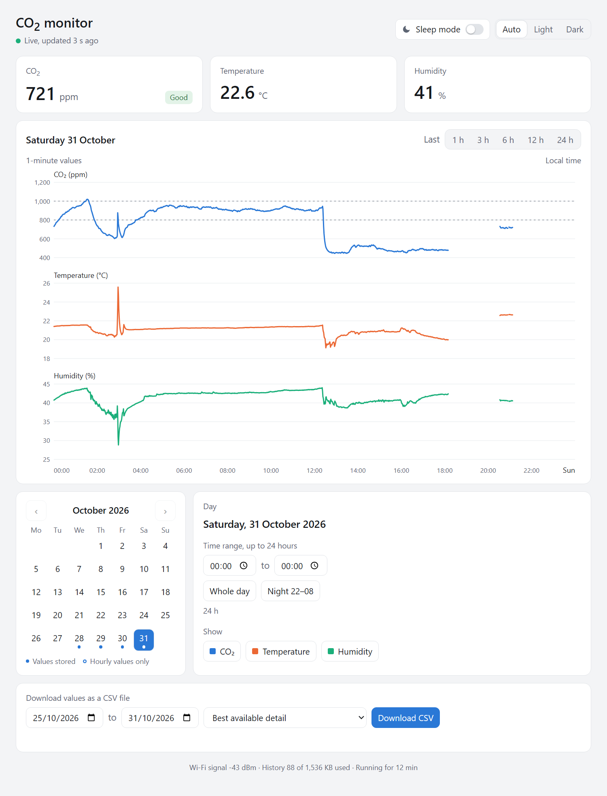
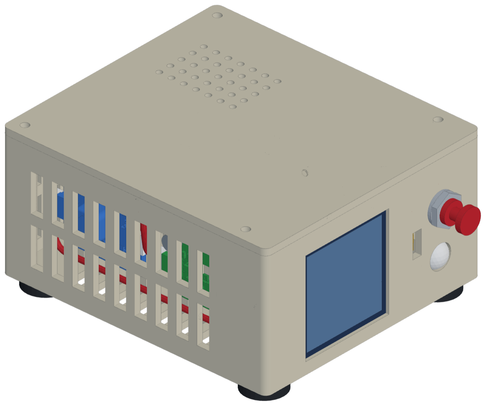
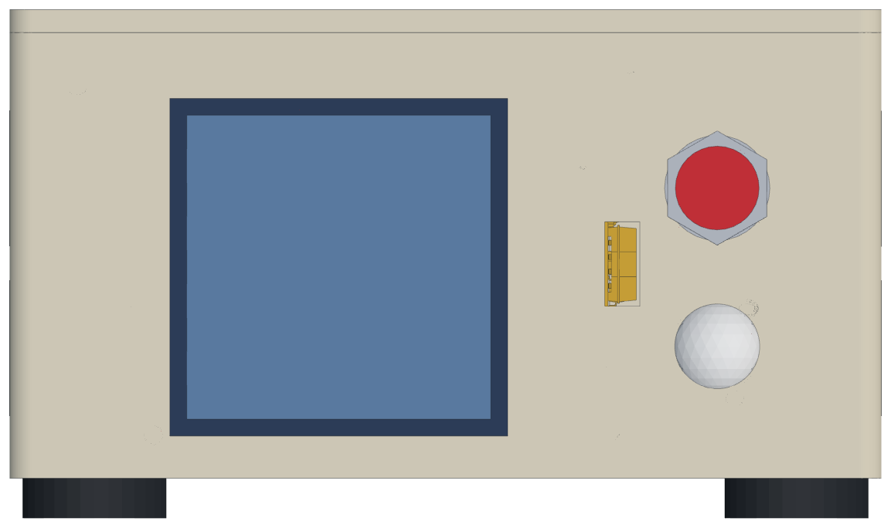
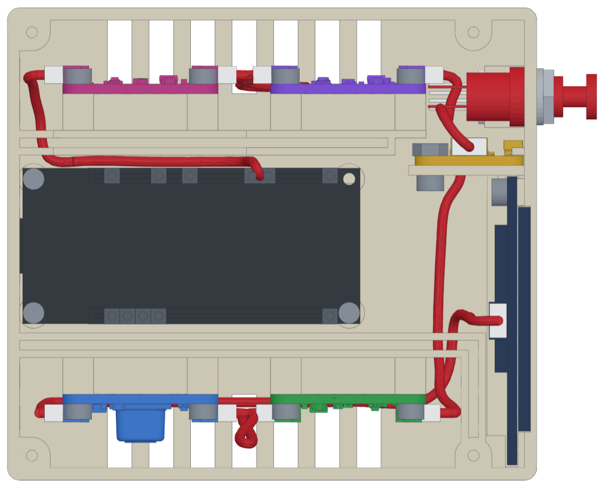
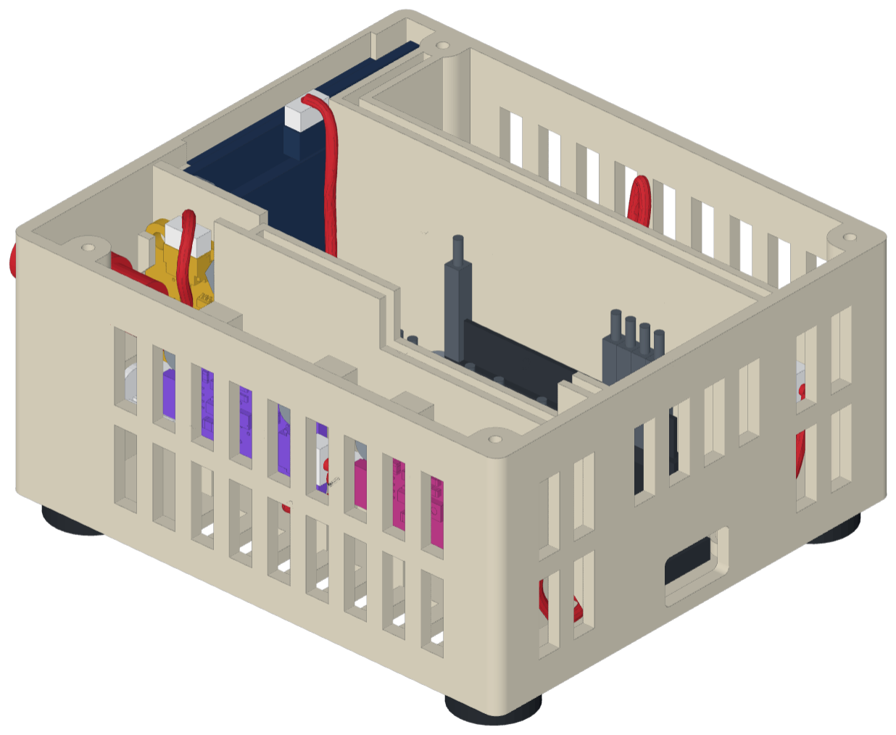
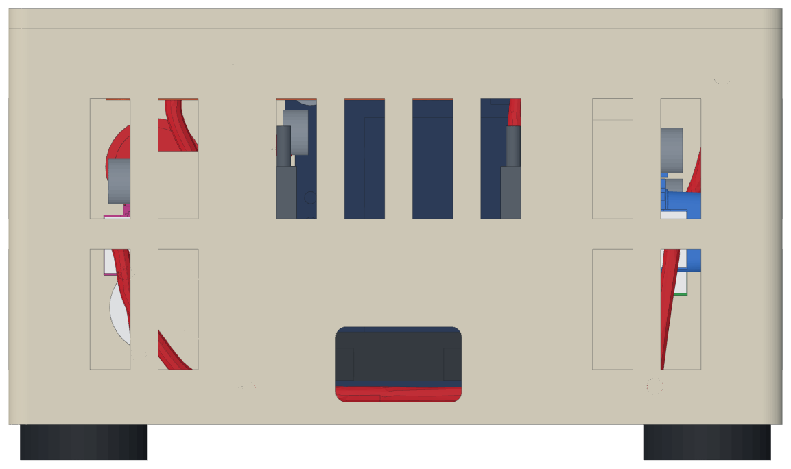
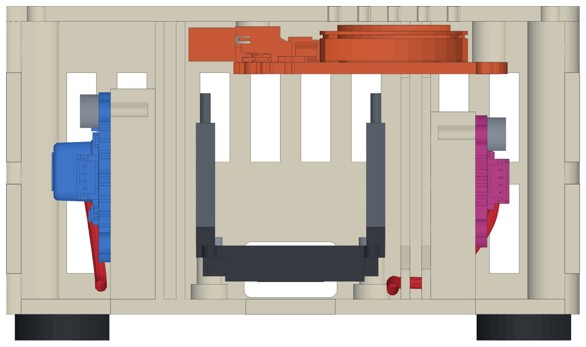
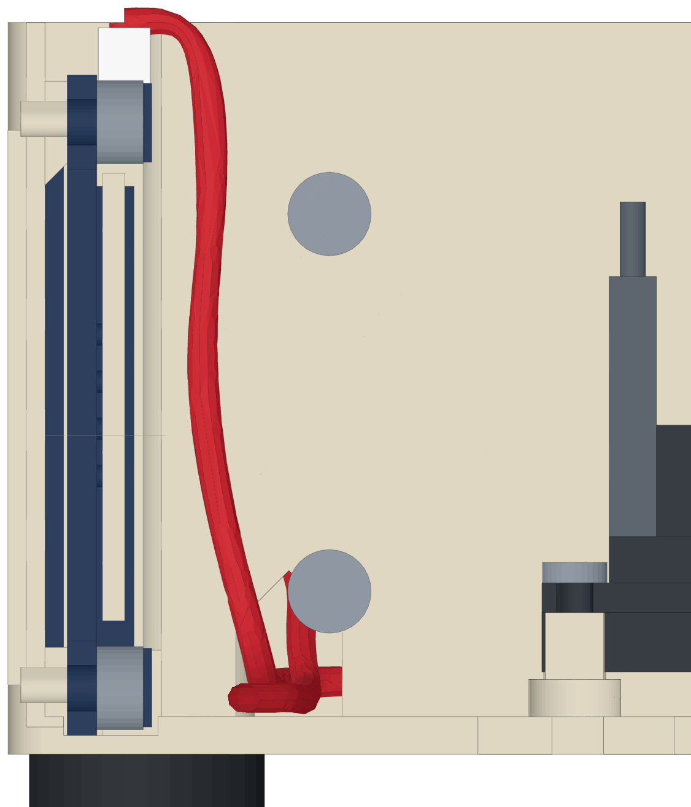
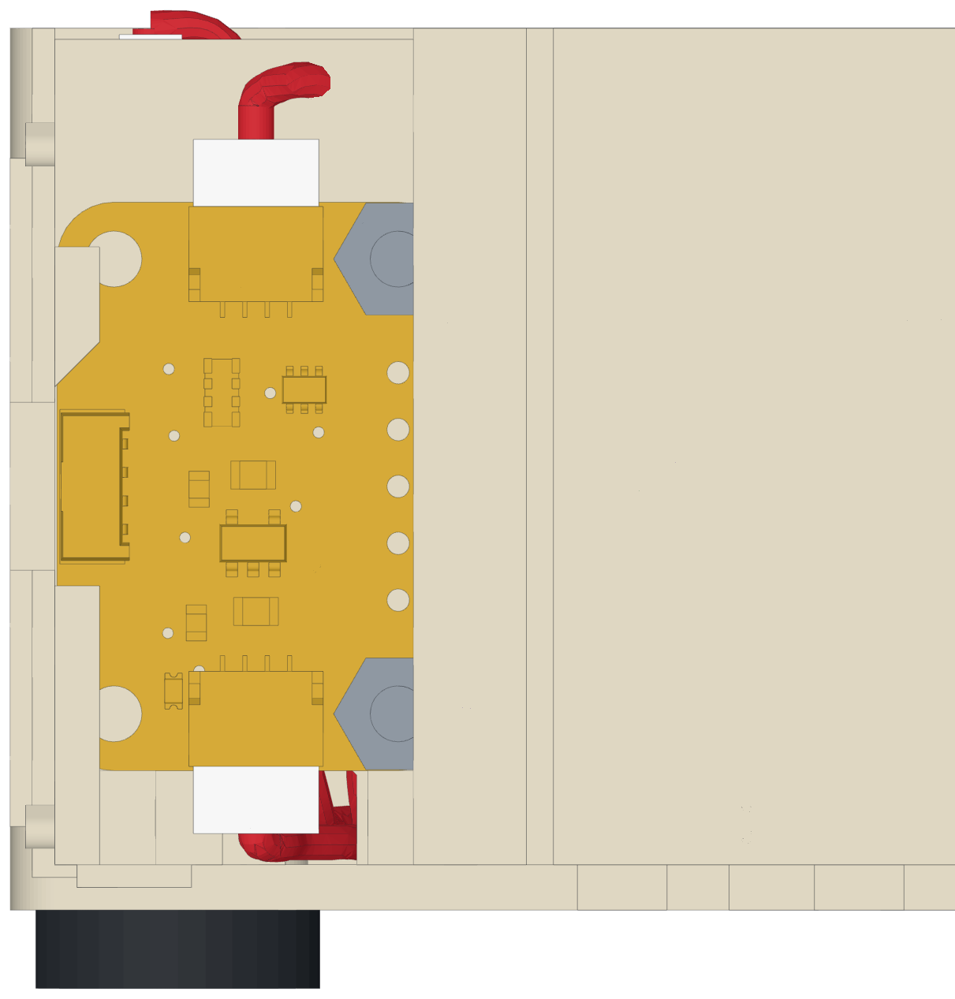

CO2 Monitor
ESP32-C6 · Sensirion SCD-41 CO2 sensor · SHT45 temperature & humidity · 1.5" OLED · light, pressure and air-quality sensors · printed case
- Project overview
- Hardware list
- ESP32-C6 pin diagram
- Prototyping
- Arduino IDE setup
- Firmware
- History storage
- Web page
- Testing
- CO2 calibration
- Hardware notes
- Troubleshooting
- Case (design v5)
- Change log
1Project overview
Step 1 goal: the OLED shows the temperature and humidity from the SHT45 and the CO2 concentration from the SCD-41. To save power and prevent OLED burn-in, the display switches off after 30 seconds. A button wakes it for another 30 seconds. The sensors keep measuring while the display is off, and a dimmed RGB LED shows the CO2 level all the time as a colour from green through yellow to red.
Step 2: the monitor joins your Wi-Fi, gets the time from the internet and keeps a history of the values in its own flash memory: 1-minute values for 7 days, 5-minute values for 90 days and hourly values for about 3½ years (section 7).
Step 3: the monitor serves its own web page. Any browser on the home network shows the live values, graphs of any stored day and time range, and a CSV download, in light or dark mode (section 8). A sleep mode for the night switches the RGB LED off and shows a small moon on the display; a long press on the button or a switch on the web page turns it on and off (section 6).
Case (now): the monitor moves into a printed case (section 13, design v5). In it the monitor gets a 1.5" 128×128 display, a light sensor, a pressure sensor, an air-quality sensor, a speaker, a panel button and an 8 mm LED on the front, all on a smaller ESP32-C6 board with one USB-C port. The parts are ordered (section 2). Until they arrive, the firmware keeps running on the breadboard prototype (section 4). When they are here, the firmware and this document are updated for them. Next step after that: Matter for the Alexa Echo.
The ESP32 talks to all I²C parts over one shared I²C bus, made of four wires: 3.3 V, GND, SDA (data) and SCL (clock). In the case the bus runs as one chain of STEMMA QT cables from board to board (Figure 1). Each part has its own fixed address, so they don't get in each other's way. The button, the LED and the speaker each have their own pin (section 3).
Project files
| File | Purpose |
|---|---|
firmware/co2_monitor/co2_monitor.ino | Main program (step 3): sensors → display, button wake, 30 s timeout, CO2 colour on the RGB LED, sleep mode, serial output, Wi-Fi and internet time, Serial Monitor commands. |
firmware/co2_monitor/history.h, history.cpp | History storage in the flash (section 7). The Arduino IDE shows them as tabs next to the main program. |
firmware/co2_monitor/web.h, web.cpp | Web server: the page and the data addresses it uses (section 8). |
firmware/co2_monitor/web/index.html, make_web_page.ps1, ../web_page.h | The web page; the script packs it into web_page.h, the compressed copy the firmware serves (8.6). |
firmware/co2_monitor/secrets_example.h | Template for secrets.h. |
firmware/co2_monitor/secrets.h | Your Wi-Fi name and password (5.8). Not stored in git. |
firmware/i2c_scanner/i2c_scanner.ino | Wiring check: lists all I²C devices it finds. Run this first. |
firmware/scd41_calibration/scd41_calibration.ino | Optional tool: forced recalibration (FRC) of the SCD-41 in fresh outdoor air. |
docs/CO2_Monitor_Documentation.html | This document (source). |
docs/CO2_Monitor_Documentation.pdf | PDF version, regenerated from the HTML after every change. |
docs/build_pdf.ps1 | Script that turns the HTML into the PDF (uses Chrome or Edge in headless mode). |
docs/web_page.png | Screenshot of the web page (Figure 5). |
docs/case_v5_*.png | Pictures of the case model (Figures 7-11). The case_v4_*.png pictures belong to the earlier v4 model. |
cad/adafruit/*.step, LICENSE | Adafruit's 3D models of the sensor and speaker boards (MIT licence), the reference for the case model (section 13). |
cad/case_v5.py, viewer_template.html, requirements.txt | The case model, design v5 (section 13): one Python script with every size. It writes the STEP files for the printer, STL files and a 3D viewer page into cad/out/v5/. |
cad/test_pieces_v5.py | Cuts small test pieces out of the v5 base (section 13, Printing at school) and writes their STL files into cad/out/v5/test_pieces/. |
cad/out/v5/ | The files case_v5.py writes: viewer.html, base.step and lid.step, and an STL of every part; in test_pieces/ the test pieces from test_pieces_v5.py. They are stored in git, so the viewer and the print files are there without running the scripts. After a change to case_v5.py, run both scripts and commit the new files together with it. The older output folders (cad/out/, cad/out/v4/) and the Python environment cad/.venv/ are not stored in git. |
cad/case_v4.py, cad/case.py | Earlier case designs (v4 and v3), kept for reference; they write into cad/out/v4/ and cad/out/. |
2Hardware list
Everything that goes into the case (design v5, section 13), as of 5 Nov 2026. have = here already, ordered = on its way, to buy = not ordered yet. The parts that were only used on the breadboard prototype are in section 4.
| # | Component | Role | Interface | Supply | Status |
|---|---|---|---|---|---|
| 1 | Waveshare ESP32-C6-DEV-KIT-N16 with headers, Berrybase WS-30547; 16 MB flash | Microcontroller: reads the sensors, drives the display, LED and speaker | 1× USB-C | 5 V via USB → on-board 3.3 V regulator | ordered |
| 2 | Adafruit SCD-41 (STEMMA QT) Sensirion SCD41 | CO2 sensor (photoacoustic NDIR) | I²C 0x62 | 3.3-5 V (we use 3.3 V) | have |
| 3 | Adafruit SHT45 (STEMMA QT) Sensirion SHT45 | Temperature and relative humidity | I²C 0x44 | 3-5 V (we use 3.3 V) | have |
| 4 | Adafruit 1.5" 128×128 grayscale OLED (4741) SSD1327 controller | Display | I²C 0x3D, STEMMA QT | 3-5 V (we use 3.3 V) | ordered |
| 5 | Adafruit VEML7700 right angle (5378) | Ambient light: dims the display and LED at night | I²C 0x10, STEMMA QT | 3-5 V | ordered |
| 6 | Adafruit BMP580 (6411) | Air pressure for the SCD-41's pressure compensation | I²C 0x46/0x47, STEMMA QT | 3-5 V | ordered |
| 7 | Adafruit SGP40 (4829) | Air quality (VOC index) | I²C 0x59, STEMMA QT | 3-5 V | ordered |
| 8 | Adafruit STEMMA Speaker (3885) | Alarm beeps | GPIO3 (PWM), 3-pin JST PH | 5 V | have |
| 9 | Panel button, Berrybase 10130 (red) | Wakes the display, switches sleep mode | GPIO2 | - | ordered |
| 10 | 8 mm addressable LED, Berrybase PL9823-F8 (diffused), with a 1N4148 diode | CO2 colour on the front | GPIO18 (one data wire) | 5 V through the diode | ordered |
| 11 | STEMMA QT cables, plug to plug, 2 × 50 mm | Chain: SHT45 to SCD-41, BMP580 to light sensor | JST SH 1.0 mm | - | have |
| 12 | STEMMA QT cables, plug to plug, 100 mm and 200 mm | Chain: light sensor to SHT45, SCD-41 to display | JST SH 1.0 mm | - | ordered |
| 13 | STEMMA QT cable with female sockets, 150 mm (Adafruit 4397) | ESP32 pins to the first sensor | JST SH 1.0 mm | - | ordered |
| 14 | USB-C data cable | Power and programming. Charge-only cables don't work. | - | - | have |
Still to buy
| Part | For | Status |
|---|---|---|
| STEMMA QT cable, plug to plug, 50 mm (a third one) | SGP40 to BMP580. Without it the SGP40 stays unplugged and the 150 mm cable goes to the BMP580. | to buy |
| JST PH 3-pin cable with female sockets (Adafruit 3894) | Speaker to the ESP32 pins. The speaker's input is JST PH, not STEMMA QT. | to buy |
| Female-female jumper wires, about 6, 10-20 cm | Button (2 wires) and LED (3 wires) | to buy |
| Screws and nuts: 4 × M3 × 10; 10 × M2.5 × 6 and 2 × M2.5 × 4 hex socket; 2 M2.5 nuts; 4 × M2 × 6 button head; 4 × M2 × 6 | Lid, sensor boards, light sensor, display, ESP32, speaker | to buy |
| 4 stick-on rubber feet, ⌀10-13 × 3-4 mm | Under the base | to buy |
| Dust mesh | Behind the sensor bays' side slots (type and thickness still open) | to buy |
| Drills ⌀1.6-8 mm and a pin vise, 2 mm hex precision screwdriver, 2 mm hex L-key, 5 mm spanner | Opening the pilot holes, assembly. The school workshop may have them. | to get |
Section 13 (Parts for the case) gives each part's details and where it goes; section 11 has notes on the boards. The firmware so far drives only the SCD-41 and SHT45 of these parts. The rest follows when the parts are here.
3ESP32-C6 pin diagram
Pins used in the case
| Header pin | Signal | Used for | Wire | In the firmware |
|---|---|---|---|---|
| J1-1 | 3V3 | 3.3 V supply for the I²C chain | STEMMA QT cable with female sockets: red, black, blue, yellow | yes |
| J3-1 | GND | Ground for the I²C chain | ||
| J3-5 | GPIO23 | I²C SDA (Arduino default for ESP32-C6) | ||
| J3-6 | GPIO22 | I²C SCL (Arduino default for ESP32-C6) | ||
| J1-12 | GPIO2 | Panel button (internal pull-up, pressed = LOW) | jumper wire to each lug | yes |
| J3-15 | GND | Panel button, other lug | ||
| J1-13 | GPIO3 | Speaker SIG (tones by PWM) | JST PH 3-pin cable; the LED's 5 V wire is joined to it | later |
| J1-14 | 5V | Speaker +, and the LED's VDD through the 1N4148 | ||
| J1-15 | GND | Speaker − | ||
| J3-10 | GPIO18 | 8 mm LED, DIN | jumper wires | later |
| J3-12 | GND | 8 mm LED, GND | ||
| (J1-9) | GPIO8 | On-board RGB LED, the CO2 colour in today's firmware. In the case it faces the floor. | no wire | yes, until GPIO18 takes over |
Upside down in the case, J1 lies along the sensor chamber's double wall and J3 along the compartment's. None of these is a strapping pin. Still to do in the firmware when the parts are here:
- The display moves to the 1.5" OLED: the SSD1327 driver (Adafruit_SSD1327 library) at 0x3D, turned 90° with
setRotation(), and a new 128 × 128 screen layout. - The CO2 colour moves from the on-board RGB LED (GPIO8) to the LED on GPIO18, with red and green swapped for the PL9823.
- The speaker, BMP580, light sensor and SGP40 are added. Read the light sensor while the LED is off for 25-50 ms (too short to see), so the LED's own light doesn't count.
Pins to avoid (or use with care)
- Strapping pins GPIO4, GPIO5, GPIO8, GPIO9, GPIO15: their level during reset decides how the chip boots. A button or sensor pulling one of them low can stop the board from starting. GPIO8 also drives the on-board RGB LED, and GPIO9 is the BOOT button.
- GPIO12 / GPIO13: native USB (D− / D+). Using them breaks the native USB port.
- GPIO16 / GPIO17: UART0 TX/RX, used by the USB-serial chip and the Serial Monitor.
- 5V pin: carries 5 V from USB. In the case it feeds only the speaker and, through the diode, the LED. The GPIOs are not 5 V tolerant. Never connect 5 V to a GPIO or to the I²C chain.
- Good free pins for later: GPIO0, 1, 6, 7 (low-power GPIOs, some with ADC), GPIO10, 11, 19, 20, 21.
4Prototyping
Before the case, the monitor was built on a 400-point breadboard. Steps 1 to 3 of the firmware (sections 6 to 8) were written and tested on it, and it keeps running until the case parts are here. The case uses none of the breadboard wiring: there, all I²C parts hang on one STEMMA QT chain (Figure 1), and the button, LED and speaker sit on the ESP32's pins (section 3).
| On the prototype | In the case |
|---|---|
| Espressif ESP32-C6-DevKitC-1-N8: 8 MB flash, two USB-C ports ("USB" and "UART") | Waveshare ESP32-C6-DEV-KIT-N16: the same pins, 16 MB, one USB-C port |
| Joy-it 0.96" OLED, 128×64, SSD1306 at 0x3C, lying flat in the breadboard | Adafruit 1.5" OLED, 128×128, SSD1327 at 0x3D, on the STEMMA QT chain |
| The board's own RGB LED (GPIO8) | An 8 mm LED in the front (GPIO18) |
| 4-pin tactile push button on GPIO2 | Panel button on GPIO2 |
| Bus rows on the breadboard, 5 jumper wires, a STEMMA QT to male-pin cable to the SCD-41 | One chain of STEMMA QT cables |
| SCD-41 and SHT45, loose on their cables | The same two boards, screwed into the sensor chamber |
What the prototype showed:
- The SCD-41, the SHT45 and the display work together on one 3.3 V I²C bus. The scanner, the main program, the history, the web page and sleep mode were all tested on it (section 9).
- The power LEDs of the boards stay lit at night, whatever the firmware does. They need tape or a cut jumper (section 11).
- The DevKitC-1's "UART" port needed the Silicon Labs CP210x driver on this PC.
- Its parts were measured on 1 Nov 2026 for the first case designs. The values for the sensor boards, the button and the speaker are still used (section 13).
The breadboard layout and its wiring list are in the earlier versions of this document (up to 0.21, in git).
5Arduino IDE setup
5.1 Arduino IDE
Download Arduino IDE 2.x from arduino.cc/en/software and install it with the default options. Allow the USB driver installation if Windows asks.
5.2 ESP32 board package
- Tools → Board → Boards Manager…, search
esp32. - Install "esp32 by Espressif Systems", version 3.x. (Not "Arduino ESP32 Boards", which is a different package for Arduino's own boards.)
- If it isn't listed: File → Preferences → Additional boards manager URLs, add
https://espressif.github.io/arduino-esp32/package_esp32_index.json, then search again.
5.3 Libraries
Sketch → Include Library → Manage Libraries… (or the books icon on the left). For each library, click INSTALL. When the IDE asks about dependencies, choose INSTALL ALL.
| Search for | Install | Pulls in automatically | Tested version |
|---|---|---|---|
Adafruit SSD1306 | Adafruit SSD1306 (by Adafruit) | Adafruit GFX Library, Adafruit BusIO | 2.5.17 / GFX 1.13.0 / BusIO 1.17.4 |
Adafruit SHT4x | Adafruit SHT4x Library (by Adafruit) | Adafruit Unified Sensor (+ Adafruit SH110X, unused) | 1.0.5 / Unified Sensor 1.1.15 |
Sensirion I2C SCD4x | Sensirion I2C SCD4x (by Sensirion) | Sensirion Core | 1.1.0 / Core 0.7.3 |
5.4 Board settings (Tools menu)
| Setting | Value |
|---|---|
| Board | ESP32C6 Dev Module (Tools → Board → esp32) |
| Port | the COM port that appears when you plug in the board |
| USB CDC On Boot | Disabled if you use the USB-serial COM port · Enabled if you use the native USB COM port (5.5) |
| Flash Size | 8MB (64Mb). The Waveshare board has 16 MB; the 8 MB setting works on it and keeps the history in the same place. |
| Partition Scheme | 8M with spiffs (3MB APP/1.5MB SPIFFS). The history lives in its 1.5 MB data area (section 7). |
| CPU Frequency | 160MHz (WiFi) |
| Upload Speed | 921600 (use 115200 if uploads fail) |
| Erase All Flash Before Sketch Upload | Disabled (the default). Enabled deletes the stored history. |
| Everything else | leave at default |
5.5 Which COM port?
The Waveshare board has one USB-C port. A small hub chip on the board (CH334F) passes two USB devices through it, so the PC shows two COM ports: the ESP32-C6's native USB and a USB-serial chip (WCH CH343P). Both can power and program the board. Recommended: the USB-serial port with USB CDC On Boot = Disabled. Serial output then appears from the first moment after reset. With the native USB port, set USB CDC On Boot = Enabled, otherwise the Serial Monitor stays empty.
Drivers: the native USB port uses a driver built into Windows. The CH343P may need WCH's CH343 driver. If Device Manager lists a device under Other devices with a warning and no second COM port appears, install the CH343 Windows driver from WCH's website (wch-ic.com), then unplug the board and plug it back in. The port then appears under Ports (COM & LPT); select it in the Arduino IDE.
If no device appears at all, not even under Other devices, try another cable: many USB-C cables are charge-only.
5.6 First upload test
- Plug in the board, select board and port as above.
- File → Examples → ESP32 → GPIO → BlinkRGB and click Upload (→ arrow).
- The on-board RGB LED should cycle through colours. The toolchain works.
- If the upload says "Failed to connect": hold BOOT, tap RESET, release BOOT, then upload again. Press RESET after the upload finishes.
5.7 Open the project sketches
File → Open… and pick the .ino file inside firmware/<name>/. The Arduino IDE needs each sketch in a folder with the same name, which is how the project is laid out. Serial Monitor: Tools → Serial Monitor, set to 115200 baud.
5.8 Wi-Fi name and password (secrets.h)
The monitor needs Wi-Fi for the clock, and later for the web page. Your network name and password go in firmware/co2_monitor/secrets.h. Git ignores this file, so the password never ends up in the repository. The IDE shows it as a tab next to co2_monitor.ino.
- If
secrets.his missing (for example in a fresh copy of the project), copysecrets_example.hand rename the copy tosecrets.h. Without it the sketch doesn't compile. - Replace
your-wifi-nameandyour-wifi-password. Keep the quotes. - The ESP32-C6 only uses 2.4 GHz Wi-Fi. A router that sends 2.4 and 5 GHz under one name is fine.
constexpr char WIFI_SSID[] = "MyNetwork"; constexpr char WIFI_PASSWORD[] = "my secret password";
The monitor shows up in your router's device list as co2-monitor. For the web page, reserve a fixed address for it in the router later (DHCP reservation).
6Firmware (co2_monitor.ino)
What it does
- Starts the I²C bus on GPIO23 (SDA) / GPIO22 (SCL).
- SHT45: high-precision reading every 2 s, heater off.
- SCD-41: periodic measurement, a new CO2 value every 5 s. Altitude compensation is set at every start.
- Warm-up: for the first 30 s after start-up the sensors measure, but no value is shown, printed or saved. The values from this time are thrown away. The display counts down ("warming up", 30 s … 1 s).
- Display: on during the warm-up, then for 30 s with the first values, and for 30 s after every button press. Pressing while it's on restarts the 30 s. When off, the panel is fully dark and the content is kept. Brightness is set by
OLED_BRIGHTNESS. - RGB LED (on the board, GPIO8): dimmed, on all the time except in sleep mode, shows the CO2 level as a colour that changes smoothly from green through yellow to red. It stays off until the first CO2 value after the warm-up.
- Sleep mode: RGB LED off, a small moon on the display. Hold the button for 2 s or use the switch on the web page (see Sleep mode below).
- Serial: one line per CO2 reading after the warm-up, usable in the Serial Monitor and the Serial Plotter.
- Wi-Fi and clock: connects with the details in
secrets.hand reconnects by itself. Gets the time (UTC) from the internet and updates it every 3 hours. - History: stores 1-minute, 5-minute and hourly values in the flash (section 7). You can view them with commands in the Serial Monitor (7.6).
- Web page: live values, graphs and CSV downloads in a browser on the home network (section 8).
- A missing module is reported on Serial and on the display (
--.-/ "SCD-41 missing"). The rest keeps working.
Settings at the top of the sketch
| Constant | Default | Meaning |
|---|---|---|
SENSOR_ALTITUDE_M | 0 | Set this to your altitude in metres above sea level. The SCD-41 uses it for air-pressure compensation. Without it, readings at e.g. 500 m are a few percent off. |
WARMUP_TIME_MS | 30000 | Warm-up after start-up (ms): the sensors measure, but nothing is shown, printed or saved. |
OLED_ADDRESS | 0x3C | 0x3D if the address resistor on the back of the OLED was moved. |
OLED_ROTATION | 0 | 0 = normal, header pins at the top. Set 2 if the text appears upside down (e.g. if you mount the display the other way round). |
OLED_BRIGHTNESS | 10 | Display brightness 0-255 (the SSD1306's contrast setting; 207 is the library default). The range is smaller than it sounds: even 0 stays readable, at roughly half brightness. Lower values also slow burn-in. |
DISPLAY_ON_TIME_MS | 30000 | How long the display stays on (ms). |
LONG_PRESS_MS | 2000 | How long the button must be held to switch sleep mode on or off (ms). |
SLEEP_MESSAGE_MS | 2500 | How long the display confirms the new mode after a long press (ms). |
BUTTON_PIN | 2 | Button GPIO (other leg to GND). |
I2C_SDA_PIN / I2C_SCL_PIN | 23 / 22 | I²C pins. |
CO2_GOOD_BELOW, CO2_OK_BELOW, CO2_VENTILATE_BELOW | 800 / 1000 / 2000 | Limits for the rating shown at the top right, and the points where the LED is green, yellow and red. |
LED_BRIGHTNESS | 5 | Brightness of the RGB LED, 1-255 (0 = off). 255 is glaring; the BlinkRGB example uses 64. Try 3-5 for a bedroom, 20-30 for a bright room. |
LED_GREEN, LED_YELLOW, LED_RED | {0,255,0} / {255,160,0} / {255,0,0} | The three colours at full brightness, as {red, green, blue}. Yellow has less green because the green LED looks brighter than the red one. If yellow looks too green, lower its middle value. |
WIFI_HOSTNAME | co2-monitor | The name shown in your router's device list. |
NTP_SERVER_1, NTP_SERVER_2 | pool.ntp.org / time.google.com | Internet time servers. Your router's address also works if it offers time itself. |
The Wi-Fi name and password are in secrets.h (5.8). The history settings are in history.cpp (7.9).
CO2 rating on the display and the LED
| CO2 (ppm) | Display | LED | Meaning |
|---|---|---|---|
| below 800 | GOOD | green | Well-ventilated room (outdoor air is about 420-430 ppm). |
| 800 to 999 | OK | green → yellow | Acceptable. |
| 1000 to 1999 | VENTILATE (inverted) | yellow → orange → red | Air is getting stale. Open a window. 1000 ppm is the classic guideline (Pettenkofer value). |
| 2000 and above | BAD AIR (inverted) | red | Ventilate now. Tiredness and poor concentration are common at these levels. |
The LED colour changes smoothly with the CO2 value; for example, 1500 ppm is orange. It is updated with every new reading (every 5 s) and stays on while the display is off. In sleep mode it is off.
Sleep mode
For the night. Sleep mode switches the RGB LED off and puts a small moon in the top line of the display (Figure 3). Everything else carries on: the sensors measure, the history records, and the web page works. Sleep mode is not the ESP32's deep sleep, which would stop all of that.
| Switch it with | How |
|---|---|
| The button | Hold it for 2 s. The display wakes as soon as you press, and after 2 s it shows a big moon with "Sleep mode on - LED off" (or a sun with "off - LED on") for 2.5 s. When switching on, the display then goes dark at once; when switching off, it shows the values for the rest of the 30 s. A short press still just wakes the display, in sleep mode with the moon at the top. |
| The web page | The Sleep mode switch at the top right (8.3). The display stays dark, so the bedroom does too; if it happens to be on, the moon appears or disappears. |
| The Serial Monitor | sleep on or sleep off (7.6). status shows the current mode. |
- Remembered: the mode is stored in the ESP32's settings memory (NVS), apart from the history. It survives a restart, a power cut and a firmware upload. Erase All Flash resets it to off.
- Lights that stay on: the ESP32 board's red power LED and the green "on" LEDs of the SCD-41 and SHT45 are wired straight to the power supply. No software can switch them off. How to cover or disconnect them: section 11.
- After a restart in sleep mode the display still shows the warm-up and the first values, as always (about 1 minute), then stays dark.
7History storage
The monitor keeps a long-term record of its values in the ESP32's own flash memory, with no extra hardware. The web page (section 8) draws its graphs from it and offers it as a CSV download. You can also read it in the Serial Monitor (7.6). The code is in history.h and history.cpp.
7.1 Three levels of detail
| Level | Each record holds | Record | Files | Kept |
|---|---|---|---|---|
1-minute (m1) | average CO2, temperature, humidity and air pressure | 12 bytes | /m1/20261028.bin, one per day, up to 17 KB | 7 days |
5-minute (m5) | the same | 12 bytes | /m5/20261028.bin, one per day, up to 3.5 KB | 90 days |
Hourly (h1) | average, minimum and maximum of CO2, temperature and humidity; average pressure; number of minutes measured | 26 bytes | /h1/202610.bin, one per month, up to 19 KB | until the flash is full, about 3½ years; then the oldest month is deleted |
- Air pressure stays empty until the BMP580 is in the firmware. The light level isn't stored; the VEML7700 is meant for the display brightness.
- The hourly minimum and maximum come from the 1-minute averages, not from single 5-second readings.
- Each file starts with a format version, so a later firmware can add values without losing the older data.
7.2 How a reading gets saved
- Every 5 s the SCD-41 delivers a CO2 value. Together with the latest SHT45 values it is added to the average of the current minute, in RAM. Nothing is stored during the 30 s warm-up after a start.
- Every 10 minutes (at :00, :10, :20 … plus 5 s) the finished minutes are appended to today's file in
/m1. - In the same save, every finished 5-minute period and every finished hour is worked out from the saved 1-minute values and appended to
/m5and/h1. Because they always come from saved data, a power cut doesn't leave a hole in them: the hour that was running is completed after the restart from what was saved before. - Files older than their retention are deleted. If less than 64 KB is free, the oldest hourly month is deleted.
Records are only ever added to the end of a file, never changed later. Flash memory can't change data in place, so editing old records would wear it out much faster.
7.3 Time
- The clock comes from the internet over Wi-Fi. All values are stored in UTC; the web page converts them to your local time, summer time included. That's why a day file starts at midnight UTC, not at local midnight.
- If the internet is down after a restart, the monitor doesn't know the time yet (it has no clock battery). It keeps up to 24 hours of 1-minute values in RAM and gives them their correct times as soon as the clock is set. If the clock still isn't set after that, the oldest minutes are dropped.
- Without Wi-Fi details in
secrets.hnothing is recorded, because the values would have no time.
7.4 Power cuts, moving and flash wear
- Power cut: the saved history is safe. LittleFS finishes a save completely or not at all, so files are never damaged. You lose at most the last 10 minutes. A firmware upload or the RESET button counts as a power cut too. Before you unplug or upload on purpose, type
savein the Serial Monitor. - Moving the monitor: the same as a power cut. The history stays on the device. In another home, only
secrets.hneeds the new Wi-Fi. - Flash wear: flash wears when a 4 KB block is erased, and each block is rated for at least 100,000 erases. A save erases about 2-3 blocks, and LittleFS spreads the erases over the roughly 150 blocks that are reused again and again. That's about 2 erases per block per day, or around 100 years until the rating is reached.
7.5 What erases the history
- a different Flash Size or Partition Scheme in the Tools menu (5.4). The firmware notices this at start, prints
History OFF: wrong partition schemeand doesn't touch the flash. Set the menu back and upload again; the history is normally still there. - Erase All Flash Before Sketch Upload: Enabled in the Tools menu. Leave it Disabled.
7.6 Serial Monitor commands
Type a command in the Serial Monitor's input line and press Enter. The line-ending box next to it must not be set to "No Line Ending".
| Command | What it shows or does |
|---|---|
status | Wi-Fi, clock, flash use, minutes not saved yet, and the files of each level with their newest value. |
files | Every history file with its size and number of values. |
csv m1 1 | The 1-minute values of the last day as CSV. m5 = 5-minute, h1 = hourly; the number is how many days back (csv h1 400 = more than a year of hourly values). |
save | Saves the minutes waiting in RAM now, for example before you unplug the monitor. |
sleep on, sleep off | Switches sleep mode on or off (section 6). The answer is Sleep mode on: LED off or Sleep mode off: LED on. |
Example answer to status:
Wi-Fi: connected to "MyNetwork", signal -58 dBm, web page at http://192.168.1.50/ Sleep mode: off Clock: 2026-10-28 17:21:40 UTC Flash: 32 KB of 1536 KB used (2%) Not saved yet (in RAM): 2 minutes, next save in 505 s 1-minute values (m1): 1 file, 20261028.bin ... 20261028.bin, newest value 2026-10-28 17:19 UTC 5-minute values (m5): 1 file, 20261028.bin ... 20261028.bin, newest value 2026-10-28 17:15 UTC Hourly values (h1): 0 files
And the start of csv m1 1:
time_utc,co2_ppm,temperature_c,humidity_pct,pressure_hpa 2026-10-28 17:05,612,22.41,45.30, 2026-10-28 17:06,618,22.43,45.12,
To keep a copy, select the lines in the Serial Monitor, paste them into a text file and save it as .csv. If Excel puts everything in one column, open it with Data → From Text/CSV and choose comma as the separator. Times are UTC. An empty field means the value wasn't measured. The web page's download (8.4) is easier: it uses local time and Excel's number format.
7.7 File format
Each file is a 16-byte header followed by fixed-size records in time order. Numbers are little-endian, and values are stored as whole numbers:
| Field | Bytes | Unit | Means "missing" |
|---|---|---|---|
Header (16 bytes): the letters CO2H, format version (1), minutes per record (1, 5 or 60), record size, creation time, 4 reserved bytes. | |||
| 1-minute and 5-minute record (12 bytes): | |||
| time | 4 | UTC seconds since 1970, start of the minute or 5 minutes | - |
| CO2 | 2 | ppm | 0 |
| temperature | 2 (signed) | 0.01 °C | −32768 |
| humidity | 2 | 0.01 %RH | 65535 |
| air pressure | 2 | 0.1 hPa | 0 |
| Hourly record (26 bytes): time (4), CO2 average, minimum and maximum (3 × 2), the same for temperature and for humidity, average air pressure (2), number of minutes measured (1; 60 = complete hour), 1 reserved byte. Same units and "missing" values as above. | |||
7.8 How much fits
| Part of the 1.5 MB | Space |
|---|---|
| 1-minute files: 8 days of 17 KB (5 blocks of 4 KB each) | 160 KB |
| 5-minute files: 91 days of 3.5 KB (1 block each) | 364 KB |
| LittleFS's own data, plus 64 KB that is always kept free | about 110 KB |
| Left for hourly values, at 5 blocks (20 KB) per month or 240 KB per year | about 900 KB, roughly 3½ years |
LittleFS stores each file in whole 4 KB blocks, so space is counted in blocks. Keeping 5-minute values for 30 instead of 90 days (7.9) leaves room for about 4½ years of hourly values. A microSD card would allow much more.
7.9 Settings in history.cpp
| Constant | Default | Meaning |
|---|---|---|
MINUTE_KEEP_DAYS | 7 | Days of 1-minute values. |
FIVE_MINUTE_KEEP_DAYS | 90 | Days of 5-minute values. |
SAVE_INTERVAL_S | 600 | Seconds between saves, and the most a power cut can lose. Shorter means more flash wear. |
PENDING_MAX | 1440 | Minutes kept in RAM while the clock isn't set (24 h, 17 KB of RAM). |
MIN_FREE_BYTES | 64 KB | When less is free, the oldest hourly month is deleted. |
8Web page
The monitor serves its own web page on your home network. It shows the live values, graphs of any stored day and a CSV download. It needs no app and no internet: any browser on a phone, tablet or PC in the same Wi-Fi works. The code is in web.h and web.cpp, the page in web/index.html.

8.1 Opening the page
- At the start the Serial Monitor shows
Wi-Fi connected, web page at http://192.168.178.40/, andstatusshows it too. Type that address into the browser and save it as a bookmark, or on the phone's home screen. - The phone or PC must be in the same Wi-Fi. A guest network usually can't reach devices in the home network.
- There's no password. Anyone in your Wi-Fi can look at the values. The only thing the page can change is sleep mode; the history and the settings can't be changed from it.
8.2 Fixed address in the router
The router gives every device its address. It normally keeps it, but after a router reset or a long time switched off the monitor may get another one, and the bookmark stops working. So set the router to always give the monitor the same IP address. This is called a DHCP reservation; some routers call it a static lease or a fixed IP address. You find it in the router's network or DHCP settings, where the monitor is listed as co2-monitor.
8.3 What the page shows
| Part | What it does |
|---|---|
| Status line | Green dot: a new reading arrived within the last 15 s (the page asks every 5 s). Red dot: no connection. "Waiting for the internet time" while the monitor's clock isn't set. |
| Live values | CO2 with the same rating as the display (Good, OK, Ventilate, Bad air; limits in section 6), temperature and humidity. During the 30 s warm-up: "Warming up" with the seconds left. |
| Graphs | Right below the live values. One graph per value, all on the same time axis in local time; the heading above them names the time shown. Move the mouse over them, or drag a finger along them, to see the values at that moment. Dashed lines mark the CO2 limits that fall inside the scale. A gap means nothing was measured (power off, restart, warm-up). While the range includes the current time, new values are added every minute. |
| Last 1-24 h | The buttons 1 h, 3 h, 6 h, 12 h and 24 h above the graphs show the last hours up to now. The range then moves along with the time. Picking a day or changing a time ends it; a day picked after it is shown whole. |
| Detail | The last 7 days use the 1-minute values, up to 90 days the 5-minute values, older days the hourly averages with a shaded band from the hourly minimum to the maximum. The line above the graphs says which. |
| Day and calendar | Below the graphs: the chosen day and time range on the right, the calendar on the left (on a phone the day box comes first). In the calendar, a dot under a day means values are stored for it, a ring that only hourly values are left (days older than 90 days). Future days can't be chosen. The arrows change the month. |
| Time range | From and to, up to 24 hours. If "to" is earlier than "from", the range ends the next day. Whole day and Night 22-08 set it with one click. |
| Show | Switches the CO2, temperature and humidity graphs on and off. The browser remembers the choice. |
| Sleep mode | The switch at the top right, next to the theme buttons. Blue with the knob on the right = on: the monitor's RGB LED is off and its display shows a moon (section 6). It follows the monitor, so a long press on the button shows up here within 5 s. Greyed out while there is no connection. |
| Auto / Light / Dark | Auto follows the light or dark setting of the phone or PC. Light and Dark override it. The browser remembers the choice. |
| Bottom line | Wi-Fi signal, flash used by the history, and the time since the monitor started. |
8.4 CSV download
Choose a start and an end date (both included) and the detail, then press Download CSV. The browser fetches the values from the monitor in parts and saves them as a file, for example co2_2026-10-23_2026-10-29_1min.csv.
- Best available detail: 1-minute values if the start date is within the last 7 days, 5-minute values within the last 90 days, otherwise hourly values. One file always has one level of detail.
- Columns:
time_local(your time, summer time included),time_utc, then CO2 in ppm, temperature in °C and humidity in %. Hourly files have the average, minimum and maximum of each, plusminutes(1-minute values in that hour; 60 = complete). Each time is the start of its minute, 5 minutes or hour. A pressure column appears once the BMP580 is in the firmware. An empty field means the value wasn't measured. - Excel: the file uses the browser's number format. With German settings that's
22,5with;between the columns, so Excel opens it straight into columns.
8.5 What the web page costs
| Resource | Use |
|---|---|
| Program flash | About 60 KB more: 1,166,586 of 3,342,336 bytes (34%), up from 1,106,244. About 41 KB is the web server library and 12 KB the page (35 KB before compression). Plenty is left for Matter. |
| RAM | 0.4 KB more fixed RAM, plus a few KB while a request is answered. |
| History storage | Unchanged. The page is part of the firmware, not of the 1.5 MB data partition, and reading the history doesn't wear the flash. The keeping times in 7.1 stay the same. |
| Measuring | Every answer is below 60 KB and takes well under a second. The main program waits meanwhile, but no reading is lost: the SCD-41 keeps its newest value until it is read. |
8.6 Changing the page
- The page is
web/index.html: HTML, CSS and JavaScript in one file, with no outside libraries.web_page.hholds a compressed copy that the firmware serves. After changing the page, runweb\make_web_page.ps1in PowerShell, then upload the firmware. - To try a change without uploading, open the file in Chrome or Edge with the monitor's address added:
…/web/index.html?device=192.168.178.40. It then loads its data from the monitor.
The page gets its data from these addresses, which also work in your own scripts. Times are UTC seconds since 1970.
| Address | Answer |
|---|---|
/api/now | Live values, warm-up seconds, sleep mode, CO2 limits, Wi-Fi signal and clock state (JSON). |
/api/info | History on or off, flash use, minutes not saved yet, and the oldest file and days kept for each level (JSON). |
/api/days?from=…&to=… | The UTC days with values and their finest detail, for the calendar marks (JSON, at most 45 days). |
/api/data?res=1|5|60&from=…&to=… | The stored values as binary records, exactly as in the files (7.7). At most 2 days of 1-minute, 14 days of 5-minute or 92 days of hourly values per request. |
/api/sleep?on=1|0 (POST only) | Switches sleep mode on (1) or off (0) and answers {"sleep":true} or {"sleep":false}. Example from PowerShell: Invoke-RestMethod -Method Post "http://192.168.178.40/api/sleep?on=1". |
9Testing
Test in this order. Each step builds on the one before, so when something fails you know where to look.
Step 1: Power-on check
Plug in USB. The ESP32's power LED lights up, and so do the green power LEDs on the Adafruit boards (if present). Nothing gets warm. If anything gets hot, unplug immediately and check for a short between + and −.
Step 2: I²C scan (i2c_scanner.ino)
Upload the scanner and open the Serial Monitor (115200). Every 5 s you should see:
Scanning I2C bus (SDA = GPIO23, SCL = GPIO22) ... 0x3C OLED display (SSD1306) 0x44 SHT45 temperature / humidity 0x62 SCD-41 CO2 3 device(s) found. Expected: 0x3C (or 0x3D), 0x44, 0x62
That is the prototype's output. In the case the scanner should find six addresses: 0x10 (light sensor), 0x3D (1.5" OLED), 0x44, 0x46 or 0x47 (BMP580), 0x59 (SGP40) and 0x62. The scanner learns their names with the firmware update.
- Nothing found: check the cable on the ESP32's pins: blue on GPIO23 (SDA), yellow on GPIO22 (SCL), red on 3V3, black on GND (section 3).
- One module missing: check that its STEMMA QT plugs are pushed in all the way.
- Every module after a certain point missing: check the cable that leads to the first missing one (chain order in Figure 1).
Step 3: Main program (co2_monitor.ino)
Set SENSOR_ALTITUDE_M, upload, open the Serial Monitor. Expected output:
CO2 monitor starting SHT45 found SCD-41 found, serial 0x... SCD-41 automatic self-calibration (ASC): enabled SCD-41 measuring Warm-up: the first values follow in 30 s Warm-up done, values are shown and saved from now on CO2_ppm:612 Temperature_C:22.41 Humidity_pct:45.3 CO2_ppm:615 Temperature_C:22.42 Humidity_pct:45.2
The display shows "starting…", then "warming up" with a countdown from 30 s and --.- / --% at the bottom. After the countdown the temperature and humidity appear at once, and CO2 within 5 s ("measuring…" until then). The RGB LED on the board goes off at the start and lights up dimly in the CO2 colour with the first value. In normal room air it is green or yellowish. If the text is upside down, change OLED_ROTATION (2 ↔ 0) and upload again. Serial Plotter (Tools → Serial Plotter, 115200) draws the values as a graph. Untick Temperature and Humidity to see the CO2 curve at a useful scale.
Step 4: Button and display timeout
- About 30 s after the warm-up ends (1 minute after start-up) the display goes dark. Serial output continues, so the sensors are still running.
- Press the button. The display turns on immediately with current values.
- Press again after ~20 s. The 30 s start over.
Step 5: Sensor plausibility
- Warm-up: let everything run for 5-10 minutes before judging the values. The SCD-41 needs a few minutes to settle, and the SHT45 needs time to reach room temperature after you handled it.
- CO2 breath test: breathe gently toward the SCD-41 from 20-30 cm for a few seconds. Within 10-30 s the value jumps to well over 1000 ppm (several thousand is normal), then falls back over a few minutes. The LED goes through yellow and orange to red and back. This proves the sensor reacts. Don't breathe directly onto it from close up again and again; the moisture doesn't help it.
- Humidity: breathe near the SHT45. RH jumps by several percent and recovers within a minute.
- Temperature: hold a finger near (not on) the SHT45. Temperature rises slowly. Compare with another thermometer once it has settled; the SHT45 (±0.1 °C) is usually the more accurate one.
Step 6: Fresh-air reference check
After the sensor has run for at least 10 minutes, take the setup outdoors (shade, not in direct wind, nobody breathing near it) on a power bank or laptop. Or air the room thoroughly: windows wide open, ideally a cross-draught, for 10-15 minutes. Outdoors it should read about 400-480 ppm.
- Expected accuracy: ±(40 ppm + 5 % of reading), roughly ±60 ppm at 425 ppm. Readings between about 370 and 490 ppm outdoors are fine.
- A ventilated room rarely reaches true outdoor levels. 450-550 ppm indoors after airing is normal.
- Clearly off outdoors (e.g. above 550 or below 350 ppm): see Calibration (FRC).
Step 7: Long run
Leave it running for at least 24 h, ideally a week. Typical pattern: CO2 rises while people are in the room with the door and windows closed (a bedroom can reach 1500-2500 ppm overnight), and drops quickly when you air the room. If values drift or seem stuck, check the Serial output for errors.
Step 8: Wi-Fi, clock and history
Enter your Wi-Fi in secrets.h (5.8), upload, and open the Serial Monitor. At the start you should see:
CO2 monitor starting History: formatting the data partition (first start) History: 8 KB of 1536 KB used Wi-Fi: connecting to "MyNetwork" SHT45 found ... Wi-Fi connected, web page at http://192.168.1.50/ History: clock set to 2026-10-28 17:05:12 UTC
The "formatting" line appears only at the very first start, right after the first upload, so you'll usually miss it in the Serial Monitor. Every later start shows only the "KB used" line. Then:
- Wait until the next full 10 minutes have passed (for example 17:10:05) and type
status.m1andm5each show one file and a newest value. - Type
csv m1 1. There is one line per minute since the start, and the CO2 values match the live readings. - After the next full hour (plus 5 s), type
csv h1 1. The first hour shows fewer than 60 in theminutescolumn, because the monitor started during that hour. - Power cut test: unplug the monitor for about 20 minutes, then plug it back in. In
csv m1 1the gap starts at the last save before unplugging (at most 10 minutes earlier) and ends at the restart. Nothing else is missing. - Optional, no internet at start: switch off the router, restart the monitor, wait a few minutes, then switch the router back on.
statusshows "Clock: not set yet" until the router is back. Once the clock is set, the minutes measured without it appear incsv m1 1with the correct times.
Step 9: Web page
- Open the address from the Serial Monitor (
statusshows it too) in a browser on a phone or PC in the same Wi-Fi. The live values appear within 5 s, and the status line says "Live". - The calendar shows a dot under every day with values. Pick one, and the graph shows that day. Move the mouse over the graph: the values match
csv m1 1for that minute. The page shows local time, the Serial Monitor UTC. - Press 3 h above the graphs: they show the last 3 hours, and a minute later the range has moved on by a minute. Press Night 22-08: the range ends the next morning. Switch off two of the values under Show, and only one graph is left.
- Download the last 7 days with Best available detail and open the file in Excel. There is one row per minute, already split into columns.
- Switch your phone or PC between light and dark mode. With Auto the page follows.
Step 10: Sleep mode
- Hold the button. The display wakes at once; after 2 s it shows the big moon with "Sleep mode on - LED off", and the RGB LED goes out. Let go. After 2.5 s the display goes dark.
- Press the button briefly. The values appear with a small moon at the top, and the display goes dark again after 30 s. The LED stays off.
- Open the web page: the Sleep mode switch is on. Switch it off. The LED lights up in the CO2 colour within a moment, and the Serial Monitor shows
Sleep mode off: LED on. - Switch it on again on the page, then press RESET on the board. After the restart the Serial Monitor shows
Sleep mode on: LED off, and the LED stays off after the warm-up.csv m1 1still gets a line every minute: sleep mode doesn't stop the recording.
Tested on the board on 31 Oct 2026: web switch, /api/sleep, the Serial commands and the restart behaved as above.
10CO2 calibration (SCD-41)
The SCD-41 is calibrated at the factory by Sensirion and works out of the box. Over time, mechanical stress, soldering, shipping and ageing can shift its zero point (the "offset"). Two mechanisms correct this:
| ASC (automatic self-calibration) | FRC (forced recalibration) | |
|---|---|---|
| Who does it | The sensor itself (firmware inside the SCD-41) | Your code sends one command |
| Default | On from the factory | Only when you trigger it |
| Code needed | None. Our main sketch leaves it as it is. | The optional scd41_calibration.ino tool |
| How it works | Watches the readings over days. Assumes the lowest level seen in each period was fresh outdoor air (target 400 ppm) and slowly corrects the offset. First correction after ~44 h of operation, then every ~156 h (6.5 days). | You put the sensor in air of known CO2 (outdoors ≈ 425 ppm), let it run ≥ 3 min, and tell it "this is 425 ppm". The correction is applied immediately. |
| Requirement | The sensor sees fresh air (~400 ppm) at least once per week of operating time, while running ≥ 4 hours in one go. | Stable, known reference air, and the sensor running in its normal mode for ≥ 3 minutes beforehand. |
| Use when | Normal homes and offices that get aired regularly. | Readings are clearly off in fresh air, or the room never gets fresh air (then also switch ASC off). |
Your questions, answered
BothNormally the sensor does it itself. ASC runs inside the SCD-41 and is switched on at the factory, so no code is needed. Our main program doesn't touch the calibration; it only sends the altitude at every start. FRC is triggered by code when you know the true CO2 level. The separate scd41_calibration.ino sketch does exactly that.
Just plug it inNo fresh air is needed to start. Give it 5-10 minutes, do the breath test (CO2 must jump), then do the fresh-air check from Testing, step 6. That check tells you whether the factory calibration is still good; it doesn't calibrate anything by itself.
NoThe SCD-41 stores its calibration history (ASC and FRC) in its own EEPROM automatically, so it survives unplugging. You only need fresh air regularly for ASC to keep working long term: at least once per week of operating time, while the sensor runs for 4+ hours at a stretch. Normal airing of the room does that. Short sessions (unplugged after an hour) don't advance ASC, but they don't lose anything either.
What is stored where
| Item | Stored | After unplugging |
|---|---|---|
| Factory calibration, ASC history, FRC correction | Sensor EEPROM (automatically) | Kept |
| Altitude, ASC on/off, temperature offset, ASC target | Sensor RAM; EEPROM only after persistSettings() | Lost, back to the saved values. Our code re-sends the altitude at every start, so there's no need to persist it. |
persistSettings() in loop(), only once after a deliberate settings change. Our sketches never call it.When ASC can go wrong
- The room never gets fresh air (always occupied, never aired). ASC then treats e.g. 700 ppm as "400" and pulls all readings too low. Switch ASC off with
setAutomaticSelfCalibrationEnabled(0)+persistSettings()and use FRC every few months instead. - Target 400 vs real outdoor air: ASC assumes 400 ppm, but outdoor air today is ~420-430 ppm. ASC can therefore read ~25 ppm low. That is well inside the sensor's accuracy, so it's fine for step 1. It could later be changed with
setAutomaticSelfCalibrationTarget().
FRC procedure (only if needed)
- Upload
firmware/scd41_calibration/scd41_calibration.ino(setSENSOR_ALTITUDE_Mthe same as in the main sketch). - Take the complete setup outdoors on a power bank or laptop: shade, away from roads, chimneys and people. Don't do it at an open window indoors; indoor air near a window is often 450-600 ppm.
- Wait. The display counts down 5 minutes and shows the CO2 value and the spread (max − min) of the last minute. A spread under ~20 ppm means stable air.
- When it shows "press button", press the button (or send
cin the Serial Monitor). - The display shows "Done! corr ±xx ppm". The new reading should now be close to 425 ppm. The correction is stored in the sensor automatically.
- Upload
co2_monitor.inoagain.
FRC_TARGET_PPM = 425 (global outdoor background in 2026 is about 420-430 ppm). A wrong reference makes the sensor worse, not better, so only run FRC in genuinely fresh air.11Hardware notes
Waveshare ESP32-C6-DEV-KIT-N16 (ordered)
- Chip: ESP32-C6 in an ESP32-C6-WROOM-1 module. 32-bit RISC-V main core up to 160 MHz plus a 20 MHz low-power core, 512 KB SRAM, 16 MB flash.
- Radio: Wi-Fi 6 (2.4 GHz only), Bluetooth 5 LE, IEEE 802.15.4 (Zigbee / Thread / Matter). Not used yet. Keep the antenna end free of metal.
- 3.3 V logic, GPIOs not 5 V tolerant. The 5V pin carries USB voltage. Never connect it to a GPIO or to the I²C chain.
- Same pins as Espressif's DevKitC-1 on the prototype: two rows of 16, the same pins in the same order (J1/J3), the same SGM2212 3.3 V regulator (800 mA) and the RGB LED (WS2812B) on GPIO8. The firmware's pins don't change.
- One USB-C port: a USB hub chip (CH334F) passes both the native USB and a USB-to-serial chip (CH343P) through the one port, so the PC shows two COM ports (5.5).
- 16 MB flash. The present board settings (8 MB,
default_8MB) work on it unchanged. The stored history stays on the prototype's board: download the CSV first (8.4). - On board: BOOT button (GPIO9), RESET button, the RGB LED and a red power LED (2 kΩ, no jumper), brighter than the DevKitC-1's. In the case the board lies upside down, so both LEDs face the floor, next to the floor vents: tape over the red one for the night.
- Strapping pins GPIO4, 5, 8, 9, 15: don't connect buttons or pull-downs to them.
- Size and holes: 55 × 25.36 mm, first pin 12.0 mm from the USB end, 4 corner holes ⌀2 at 1.77 mm from both edges. The USB-C port sits in the middle of the short end and sticks out about 0.5 mm past it; RESET and BOOT sit right at the long edges, 3.9-9.1 mm from the USB end. In the case it lies upside down on 4 posts (section 13).
- Sold by Berrybase with the headers soldered on (WS-30547, €9.90). Waveshare is a long-standing Shenzhen maker; its board is a clean copy of Espressif's design, but its wiki is partly out of date.
Adafruit SCD-41 (Sensirion SCD41)
- Principle: photoacoustic NDIR. It measures real CO2, unlike cheap "eCO2" gas sensors that only estimate it.
- Range / accuracy: 400-5000 ppm specified at ±(40 ppm + 5 % of reading); outputs up to 40 000 ppm. (The SCD-40 is only specified to 2000 ppm.)
- Modes: periodic (every 5 s, ~17 mA; used here), low-power periodic (every 30 s), single shot (SCD-41 only, ~0.5 mA at one reading per 5 min; useful for battery operation later).
- I²C address 0x62 (fixed). 3.3-5 V supply; the breakout has a regulator and level shifting. A clean, stable supply matters for accuracy.
- Built-in T/RH: the SCD-41 always measures temperature and humidity; it needs them internally to compensate the CO2 value, and this cannot be switched off. Every reading returns all three values. The code reads them and simply ignores T/RH, because the sensor warms itself slightly and the SHT45 is more accurate. Ignoring them has no effect on CO2 accuracy, and neither does its temperature offset setting (it only shifts the reported T/RH). The SCD-41 cannot take temperature or humidity from the SHT45.
- Air pressure: this does affect CO2 accuracy, so set your altitude in the code. Weather changes air pressure by a few percent; the BMP580 in the case will feed live values with
setAmbientPressure(), which works during periodic measurement. - Handling: the weak spot is the white membrane on top of the metal cap. It keeps dust and water out and lets CO2 in. Sensirion: don't remove, damage, imprint or cover it. So don't touch or press it, and don't tape over it, clean it, or blow compressed air at it. The sensor is an optical system: avoid strong force on the cap, especially sideways, and drops onto hard floors. ESD rating is only 2 kV (HBM), so touch something metal first. Chemical fumes don't affect the CO2 measurement the way they affect the SHT45's humidity reading. Keep dust, direct sunlight and strong drafts off it. Leave space for air to reach it. If it ever reads clearly wrong in fresh air after a knock, a forced recalibration fixes the offset (section 10). Calibration persists in its EEPROM.
Sensor choice: SCD-41 vs SCD-30
| SCD-41 (used) | SCD-30 | |
|---|---|---|
| Principle | Photoacoustic NDIR | Dual-channel NDIR (reference channel for long-term stability) |
| Specified range | 400-5000 ppm | 400-10 000 ppm |
| Accuracy | ±(40 ppm + 5 %) → ±90 ppm at 1000 ppm | ±(30 ppm + 3 %) → ±60 ppm at 1000 ppm |
| Sensor size | 10.1 × 10.1 × 6.5 mm | 35 × 23 × 7 mm |
| Power | ~17 mA (every 5 s); single-shot mode ~0.5 mA (every 5 min) | ~19 mA (every 2 s); no low-power single-shot mode |
| I²C | Standard, up to 400 kHz | Max 100 kHz, needs clock stretching (up to 150 ms), a known source of trouble with some microcontrollers |
| Self-calibration | Fresh air once per week of operation, runs of ≥ 4 h | 7 days continuous operation, ≥ 1 h fresh air per day |
| Adafruit breakout | STEMMA QT, 0x62 | STEMMA QT, 0x61; $58.95 and often out of stock |
Conclusion: for a room monitor the SCD-41 is the better fit. It is small, has trouble-free I²C, and offers a low-power mode for a later battery version, and indoor air stays well inside 400-5000 ppm. The SCD-30 wins on paper accuracy, range and long-term stability. Choose it for mains-powered builds that may exceed 5000 ppm (greenhouse, grow tent, fermentation room) or where the best absolute accuracy matters more than size and power.
Adafruit SHT45 (Sensirion SHT45)
- Accuracy: ±0.1 °C typical (5-60 °C), ±1.0 %RH typical (20-70 %RH). Range −40…125 °C, 0…100 %RH.
- I²C address 0x44 (fixed). 3-5 V supply; the breakout has a regulator, level shifting and pull-ups.
- Built-in heater: for drying the sensor after condensation. While it runs, temperature readings are useless, so the code keeps it off.
- Placement is everything: the ESP32, the SCD-41, the display and your hand all give off heat. In the case the SHT45 sits low at the front of the sensor chamber, farthest from the ESP32. Keep the case out of direct sunlight. Airflow improves response time.
Sensor handling: what can harm them
| Source | Effect | What to do |
|---|---|---|
| Cleaning sprays (ammonia, bleach, alcohol), solvents (acetone / nail polish remover, paint, varnish), glue, silicone or epoxy while curing | Permanent damage possible. The SHT45's humidity reading drifts, in most cases for good. Sensirion names acetone, ethanol, isopropanol, toluene, ammonia and acids. | Don't spray or wipe near the sensors. Take them out of the room while painting or gluing, and air the room until the smell is gone. |
| Aerosols (hairspray, deodorant, spray paint), cooking grease, smoke | Coat the sensor openings. | Not in the kitchen or bathroom, no spraying nearby. |
| Water: spills, condensation (bathroom steam, cold window sill) | A short circuit can kill the boards. The SCD-41 is only rated for non-condensing air. | Keep everything dry. Unplug at once after a spill. |
| Static electricity | Can destroy the chips. | Touch something metal first (e.g. a radiator), hold the boards by their edges. |
| Pressing, dropping, pulling on cables | Broken connectors or solder joints. | Don't press on or poke into the SCD-41's sensor. Pull STEMMA plugs by the plug. |
| Vibration, loud bass (on top of a subwoofer or speaker) | No damage. Can make the SCD-41's readings noisier; Sensirion recommends keeping it decoupled from vibration. | Put it on a shelf or desk, not on the speaker. |
| Magnets (speakers, subwoofers, monitors, phone cases) | No effect. Neither sensor uses or reacts to magnetic fields. | Nothing. |
| Heat: sun, radiator, monitor, laptop vent, the ESP32, your hand | No damage at room conditions, but temperature reads too high and humidity too low. | See placement below. |
How likely is it? Sensirion's rule of thumb: air that people can breathe for a long time without harm won't contaminate the sensor. Normal cleaning, cooking or a candle across the room is fine. The real risks are high concentration and long exposure: the sensor right next to curing glue or silicone, painting in a closed room, wiping the sensor with alcohol, or storing it in a box with solvents. Chemicals only affect the humidity reading; temperature isn't affected.
If the SHT45 does get contaminated
- Check it with the salt test. Put a spoonful of table salt with a few drops of water (a damp paste, not dissolved) in a bottle cap. Put the cap and the SHT45 board in an airtight container or a zip bag, and run the STEMMA cable out through the seal. Make sure the salt doesn't touch the board. After 8-12 h at a steady room temperature the air inside is at 75 %RH. The SHT45 should read 74-77 %RH. If it does, it's fine.
- Mild drift: air the room well and leave the sensor running for a few days. Part of the contamination outgasses by itself.
- Heat it with its built-in heater. In Sensirion's test, SHT4x sensors were exposed to saturated acetone for 20 h, far worse than anything at home. Heating with the on-chip heater (110 mW, 80 min, about 110 °C) brought them fully back within specification. The heater runs for at most 1 s per command and must stay below a 10 % duty cycle. On the Adafruit board the thicker PCB carries heat away, so the sensor gets less hot and the treatment has to run longer. Then let it rehydrate in the salt container (12 h at 75 %RH, the second half of Sensirion's reconditioning procedure).
- Oven baking (Sensirion's full reconditioning: 10 h at 100-105 °C, then 12 h at 75 %RH) is not recommended for the breakout: the STEMMA QT connectors are only rated up to 85 °C, and a kitchen oven can't hold 100 °C accurately.
- Last resort: correct a known, stable offset in software, or replace the board. It plugs in with the STEMMA cable, with no soldering.
Touching is fine if you hold the boards by their edges after touching something metal. A finger on the SHT45 shows up as a temperature and humidity rise that disappears within a minute. Don't put fingers on the sensor openings, because skin oil stays there.
Power LEDs: taping over them or switching them off
Some LEDs stay lit in sleep mode, because they are wired straight to the supply and not to a GPIO. No firmware can switch them off.
| LED | Wiring | How to get it dark |
|---|---|---|
| Waveshare ESP32-C6, red | Power LED with a 2 kΩ resistor on the 3.3 V rail; no jumper. | Tape over it; no sensor is near it, so any tape is fine there. In the case it faces the floor. For good: unsolder its resistor (check on the board which one it is). |
| SCD-41, green "on" | D1 with R1 (10 kΩ) through jumper SJ3, front side. | Best: cut the thin trace between the two pads of SJ3 (2 in Figure 6) with a craft knife. A blob of solder across the pads undoes it. Or tape, within the green area. |
| SHT45, green "on" | D1 with R1 (10 kΩ); no jumper on this board. | Tape, as small as possible (Figure 6). For good: unsolder R1 (0603 size, next to the LED). |
- The hard limit is the sensor itself. Tape on the SCD-41's cap blocks the membrane that lets CO2 in (Sensirion: don't remove, damage, imprint or obstruct it). Tape on the SHT45's chip covers its humidity opening.
- Why keep it small anyway: PVC electrical tape and its glue give off vapours, and humidity sensors pick them up (see Sensor handling above). The SHT45 and the humidity sensor inside the SCD-41 are both affected. Sensirion's handling instructions name only a few tapes as safe near their humidity sensors (for example 3M Kapton tape 92); ordinary black electrical tape isn't one of them. A piece of about 4 × 3 mm in an open room is a small risk; a big piece inside the closed sensor chamber of the case is a bigger one.
- Allowed but pointless: tape on the rest of the board (unshaded) does no harm, as long as it keeps off the sensor, the plug openings and any mounting hole you want to screw through. It just adds more glue.
- For the finished case: cut SJ3 on the SCD-41 and, if you can solder, unsolder R1 on the SHT45. Then no tape is needed in the sensor chamber.
- The ordered boards have power LEDs too: the light sensor a green one with a jumper on the back (SJ1, labelled "LED"), the 1.5" OLED a green one. Check the BMP580 and SGP40 when they arrive.
Sensor placement
- In the room where you spend the most time (bedroom or office), at about desk to head height (0.8-1.5 m).
- About 1 m away from people's faces. Directly in front of you on the desk, every breath reaches the sensor and the CO2 value jumps around.
- Not near windows, doors, air vents, radiators, the stove, a humidifier, or in direct sunlight.
- Free air on all sides: not in a drawer, a closed shelf or behind the monitor.
- Away from warm devices such as a computer screen. Inside the case the sensor chamber keeps the SHT45 away from the ESP32's warmth, low and at the front (section 13).
- Air the room now and then: the SCD-41's self-calibration needs fresh-air levels at least once a week (section 10).
Adafruit 1.5" grayscale OLED (4741, ordered)
- 128×128 OLED with 16 grey levels, SSD1327 controller, I²C. Address 0x3D; the I²C scanner (section 9, step 2) shows it. Arduino library: Adafruit SSD1327.
- 3-5 V supply. Two STEMMA QT sockets, wired in parallel, so it can sit at the end of the chain without soldering. In the case it is turned 90°, its sockets face the floor and the lid, and only the top one is used.
- Board 41.9 × 35.6 mm with two 5.1 mm ears at one end; 4 mounting holes, two of them in the ears. The screen is about 26.9 mm square, each pixel 0.21 mm.
- OLEDs burn in like OLED TVs and phones, but without their protection features: pixels that are lit for thousands of hours age faster and leave a faint ghost image. The fixed parts of the layout (labels, lines, the °C sign) would show first. The 30 s timeout keeps the total on-time to minutes per day. If the display is ever kept on permanently, lower its brightness, shift the image by a pixel every few minutes, or switch it off at night.
Light, pressure and air-quality sensors (ordered)
- VEML7700 right angle (5378): ambient light in lux, I²C 0x10. The sensor sits at the board's edge and looks along the board, so the board can stand behind a narrow window. Two STEMMA QT sockets, one on each short edge. It sees everything in front of its window, including light from the case's own LED and display reflected by the room. In a dark room that can be most of the reading, so read it while the LED is briefly off.
- BMP580 (6411): air pressure, I²C 0x46 or 0x47, set by its address jumper. Its value goes to the SCD-41 with
setAmbientPressure()instead of the fixed altitude (see the SCD-41 above). - SGP40 (4829): air quality as a VOC index from 0 to 500 (100 = the room's usual air), I²C 0x59. It needs the temperature and humidity of the SHT45 for its compensation. It needs a third 50 mm cable in the chain (section 2).
Panel button, LED and speaker
- Panel button (Berrybase 10130, ordered): one pole, normally open, two solder lugs, M7 × 0.75 thread with a nut and washer. One lug goes to GPIO2, the other to GND. No resistor is needed: the code enables the ESP32's internal pull-up (
INPUT_PULLUP). Released = HIGH, pressed = LOW. The code debounces it (30 ms). - 8 mm LED (Berrybase PL9823-F8, ordered): diffused, addressable like the board's WS2812B: one data wire, no resistors. Rated 4.5-6 V, so it runs from the 5V pin through a 1N4148 diode; with about 4.3 V left, the ESP32's 3.3 V data counts as high. Its colour order is red-green-blue, so the firmware swaps red and green. There is no data sheet: test it before it goes into the case.
- STEMMA Speaker (Adafruit 3885, here): a small class-D amplifier (PAM8302) with a 1 W 8 Ω speaker and a volume trim pot. It is always on (a few mA when silent) and has no LED. Its input is a 3-pin JST PH socket, not STEMMA QT, so it needs the JST PH cable (to buy). The ESP32-C6 has no DAC, so tones go out as PWM on GPIO3.
STEMMA QT cables
- 4-pin JST SH, 1.0 mm pitch, same as SparkFun Qwiic. Colours: black = GND, red = V+, blue = SDA, yellow = SCL.
- Each Adafruit board has two connectors, so modules can be chained. The connectors are small; pull them out by the plug, not the wires.
- A plug with its cable bent as tight as it goes needs about 4 mm in front of the socket (measured). The lengths in the case: section 13, Cables and the I²C chain.
12Troubleshooting
| Symptom | Cause / fix |
|---|---|
| No COM port appears | Charge-only cable → use a data cable. Missing driver → see the next row. |
| A device with a warning under Other devices (for example Code 28), only one COM port | The driver for the USB-serial chip isn't installed → install WCH's CH343 driver (5.5). Or use the native USB port with USB CDC On Boot = Enabled, which needs no driver. |
| Upload: "Failed to connect to ESP32-C6" | Hold BOOT, tap RESET, release BOOT, upload again. Select the right port. Try Upload Speed 115200. |
| Serial Monitor shows nothing | Baud must be 115200. "USB CDC On Boot" must match the port (USB-serial port → Disabled, native USB port → Enabled, 5.4). Press RESET. |
| Serial Monitor shows garbage | Wrong baud rate. |
| Scanner finds no devices | The cable on the ESP32 is on the wrong pins: blue = SDA on GPIO23, yellow = SCL on GPIO22, red on 3V3, black on GND (section 3). Or its plug isn't pushed in all the way. |
| Display found but stays dark | It timed out → press the button. Check OLED_ADDRESS (0x3C vs 0x3D, see scanner output). |
| RGB LED stays off although CO2 values come in | Sleep mode is on: the display shows a moon at the top, status says "Sleep mode: on". Hold the button for 2 s, or use the switch on the web page. |
| Holding the button doesn't switch sleep mode | Hold it for a full 2 s, until the big moon or sun appears. A shorter press only wakes the display. |
| Red LED on the ESP32 and green LEDs on the sensors stay on in sleep mode | They are power LEDs on the supply, not under software control. Cover them or disconnect them (section 11, Figure 6). |
| Display text is upside down | Change OLED_ROTATION in the sketch (2 ↔ 0). |
| Button does nothing | Check its two wires: one lug to GPIO2 (J1-12), the other to GND. A cold solder joint on a lug. |
| "measuring…" never goes away after the warm-up | SCD-41 is not delivering values; check Serial for "SCD-41 not found" and the STEMMA cable. |
| CO2 fluctuates by 10-30 ppm | Normal. People nearby, drafts and doors cause real changes too. |
| Temperature reads 1-3 °C too high | The monitor stands in sunlight or next to something warm. Move it (section 11, Sensor placement). |
| Outdoor CO2 clearly not ~420 ppm | Let ASC work for a week with regular airing, or run the FRC tool outdoors. |
| Board doesn't start after adding hardware | Something is connected to a strapping pin (GPIO4/5/8/9/15). Move it to a free GPIO. |
Compile error about SensirionI2cScd4x | Old SCD4x library (0.x) installed → update to 1.x in the Library Manager. |
| Compile error "secrets.h is missing" | Copy secrets_example.h to secrets.h and enter your Wi-Fi (5.8). |
Serial: Wi-Fi: enter your network in secrets.h | secrets.h still has the example name. Enter your network and upload again. Without Wi-Fi there's no clock, so nothing is recorded. |
| "Wi-Fi: connecting…" but never "connected" | Wrong name or password (both are case-sensitive), a 5 GHz-only network, or the router is too far away. |
status: "Clock: not set yet" although Wi-Fi is connected | The router has no internet or blocks time requests (UDP port 123). The values wait in RAM for up to 24 h. If your router offers time itself, enter its address as NTP_SERVER_1. |
Serial: History OFF: wrong partition scheme | Tools menu: Flash Size 8MB, Partition Scheme 8M with spiffs (3MB APP/1.5MB SPIFFS) (5.4), then upload again. The history is normally still there. |
| Commands in the Serial Monitor do nothing | The line-ending box next to the input line is set to "No Line Ending". Choose "New Line". |
| Web page doesn't open | The phone or PC is in another network (guest Wi-Fi, mobile data). Or the address has changed: status shows the current one, and a fixed address in the router (8.2) stops it changing. |
| Web page: "No connection to the monitor" | The monitor is unplugged, restarting or out of Wi-Fi range. The page keeps trying every 5 s and continues by itself. |
| Web page: "waiting for the internet time" | Same cause as "Clock: not set yet" above. The graphs appear as soon as the clock is set. |
13Case (design v5)
The design
- Size: 86.3 × 77 × 41.4 mm, 44.9 mm high with the rubber feet. The height comes from the display standing on its long edge with a plug in its top socket; the width from the two 18 mm sensor bays and the ESP32 between them.
- Sensor chamber along one long side, 18 mm deep, behind a double wall with an air gap. It holds the SCD-41 (back) and the SHT45 (front, farthest from the ESP32), 8.5 mm apart. A double cross wall behind the display closes it at the front.
- SGP40/BMP580 compartment along the other long side: the same 18 mm, behind its own double wall with an air gap, closed at its front end by a cross piece. The BMP580 stands in its front half and the SGP40 in its back half. Its posts, side slots and vents are the chamber's, mirrored. Both sensor bays get room air straight through their slots, away from the ESP32's warmth.
- ESP32: the Waveshare board lies upside down on 4 posts at the back, its pins pointing up, so the jumper-wire plugs go straight onto them. Its USB end is 0.5 mm from the back wall, its USB-C port low in the back wall. All 4 posts are the same and all 4 corners are screwed (M2). The USB-C opening is 13.0 × 7.5 mm with 1 mm corners: at least 0.5 mm on each side of every cable's plug grip (E5). The socket sticks out about 0.5 mm past the board, so its face is flush with the inside of the back wall, 2.0 mm inside the outside face: the grip goes into the opening, and the board goes straight down onto its posts. If the socket catches on the wall, put the board in about 1 mm forward of its posts (there are over 5 mm free at the antenna end), lower it and slide it back.
- Display: the 1.5" OLED stands behind a 29.9 mm square window in the front wall, turned 90° so that its 35.6 mm side is the height. Its bottom edge sits in a 1 mm groove in the floor and its glass 1 mm deep in the front wall. Two hidden M2.5 screws from behind hold its end near the light sensor; the other end is held by the floor groove, a block behind its lower corner and a tab of the lid.
- Light sensor (right-angle VEML7700): it stands on its edge right beside the display, screwed to a wall that is also the display's rail, and looks out through a 7.5 × 3.1 mm window.
- Panel button (Berrybase 10130) and 8 mm LED (PL9823-F8): 7 mm above and below the middle of the display, beside the light sensor. The button is held by its own nut; the LED sits in a sleeve, its dome 1.5 mm out of the front.
- Vents: every vent is the same 4 × 12 mm slot. Each side wall has 9 columns in 2 rows; the back of each sensor bay has 2 × 2; each sensor bay has 7 floor vents. The ESP32 takes cool air in through 6 floor vents under the board, and its warm air leaves through 4 slots high in the back wall. The front and the lid have no vents apart from the speaker grille. No fan.
- Speaker under the lid over the ESP32, with the grille above it. Its plug faces the double wall, right above the ESP32's 5V, GPIO3 and GND pins.
- No supports: holes in walls have pointed tops, and parts that hang from a wall have 45° undersides.








Printed parts
| # | Part | Printed |
|---|---|---|
| 1 | Base: floor, walls, the two double walls with their air gaps and cable holes, the double cross wall behind the display, posts for the four sensor boards, the light sensor's wall with its window, ESP32 posts, the display's floor groove, glass recess, lip and two screw spacers, LED sleeve, lid-screw bosses, vents, USB opening, display window, button hole | upright |
| 2 | Lid with the speaker grille, 4 speaker standoffs, 2 pegs on the display's top edge, a tab behind its upper ear and a pocket over its plug | upside down |
Both parts print without supports. The only exceptions are short bridges over open holes: the slot tops (4 mm), the light-sensor window (3.1 mm), the USB opening (11.0 mm), the button and LED holes, and the top of the display window, a 29.9 mm bridge in the 1 mm skin in front of the glass (check it in the slicer's preview). The feet are bought stick-on rubber feet, so the floor lies flat on the build plate.
Parts for the case
The status is the same as in section 2 (5 Nov 2026).
| Part | For | Notes | Status |
|---|---|---|---|
| Waveshare ESP32-C6-DEV-KIT-N16, with headers (Berrybase WS-30547, €9.90) | the ESP32 in the case | Same pin rows as the prototype's DevKitC-1 (section 3). 55 × 25.4 mm with 4 corner holes ⌀2. | ordered |
| Adafruit 1.5" 128×128 grayscale OLED (4741) | the display | SSD1327 controller, I²C 0x3D, two STEMMA QT sockets in parallel. | ordered |
| Adafruit SCD-41 and SHT45 | CO2, temperature and humidity | the boards from the prototype | have |
| Adafruit BMP580 (6411) | air pressure for the SCD-41's pressure compensation | STEMMA QT, I²C 0x46 or 0x47; Adafruit BMP5xx library | ordered |
| Adafruit VEML7700 right angle (5378) | ambient light; dims display and LED at night | STEMMA QT, I²C 0x10, sees light along the board | ordered |
| Adafruit SGP40 (4829) | air quality (VOC index 0-500) | STEMMA QT, I²C 0x59. Uses the humidity and temperature of the SHT45. | ordered |
| Adafruit STEMMA Speaker (3885) | alarm beeps | class-D amplifier, 3-5 V, 3-pin JST PH input | have |
| Panel button, Berrybase 10130 (red) | wake and sleep | M7 × 0.75, 27.5 mm long, nut and washer included, solder lugs | ordered |
| 8 mm addressable LED, Berrybase PL9823-F8 (diffused), and a 1N4148 diode | CO2 colour on the front | WS2812-style: one data wire, no resistors. Rated 4.5-6 V, so it runs from 5 V; the diode in its supply (about 4.2 V left) makes the ESP32's 3.3 V data count as high. Colour order red-green-blue. | ordered |
| STEMMA QT cables, plug to plug: 3 × 50 mm, 1 × 100 mm, 1 × 200 mm | 50: SGP40-BMP580, BMP580-light sensor, SHT45-SCD-41; 100: light sensor-SHT45; 200: SCD-41-display | A 150 mm cable would just reach the display too. | have 2 × 50 ordered 100, 200 to buy third 50 |
| STEMMA QT cable with female sockets, 150 mm (Adafruit 4397) | ESP32 pins to the first sensor | - | ordered |
| Female-female jumper wires, about 6, 10-20 cm | button (2) and LED (3) wires | cut in half and solder the cut end to the part; heat-shrink over each joint | to buy |
| JST PH 3-pin cable with female sockets (Adafruit 3894) | speaker to the ESP32 pins | - | to buy |
| 4 stick-on rubber feet, ⌀10-13 × 3-4 mm | under the base | for example 3M Bumpon SJ5012 (⌀12.7 × 3.5 mm). At least 3 mm tall, so air reaches the floor vents. Their middles go 7.5 mm in from the outer edges. | to buy |
| 4 × M3 × 10 | lid | self-tapping into the bosses | to buy |
| 8 × M2.5 × 6 hex socket (ISO 4762) | SCD-41, SHT45, BMP580, SGP40, 2 each | cut their own thread in the posts; turned from outside through the slots | to buy |
| 2 × M2.5 × 6 hex socket and 2 M2.5 nuts (5 mm across flats) | light sensor | heads on the bay side of its wall, nuts on the board | to buy |
| 2 × M2.5 × 4 hex socket | display | from behind into the spacers on the front wall | to buy |
| 4 × M2 × 6 button head (ISO 7380, head ⌀3.5) | ESP32 | at the two corners next to pin 1 of each row (3V3 and GND) a socket head (⌀3.8) would touch that pin's plug | to buy |
| 4 × M2 × 6 | speaker, under the lid | - | to buy |
| Drills ⌀1.6, 2.1, 2.5, 3.2, 7 and 8 mm, a pin vise | opening the printed pilot holes | see Printing at school; the school workshop may have them | to get |
| Precision screwdriver, 2 mm hex | side-slot screws | the blade must be thin (about ⌀2.3 mm) to reach through the 4 mm slots; a Phillips PH1 is too thick | to get |
| 2 mm hex L-key, short arm 15-18 mm, and a 5 mm spanner or flat pliers | display and light-sensor screws, from inside | the key's long arm points up out of the open case; the spanner holds the light sensor's nuts | to get |
| Dust mesh | behind the sensor bays' side slots | keeps dust out, lets gases through; type and thickness still open | to buy |
Cables and the I²C chain
The ESP32 has only one 3V3 pin, so all I²C parts hang on one chain of STEMMA QT cables (Figure 1). The ESP32's pins for it and for the button, LED and speaker are in section 3 (Pins used in the case).
ESP32 → SGP40 → BMP580 → light sensor → (hole in the double wall) → SHT45 → SCD-41 → display
- ESP32 to the first sensor: the 150 mm cable with female sockets on the four pins. It drops between the ESP32's edge and the double wall and goes through a hole at the foot of the wall's back end to the SGP40's back socket. The SGP40 needs a third 50 mm cable to the BMP580 (to buy). Until it is there, the 150 mm cable goes on to the BMP580's back socket instead, and nothing else changes.
- BMP580 to the light sensor (50 mm): under the button's lugs, past the end of the double wall and down into the light sensor's top socket.
- Light sensor to the SHT45 (100 mm): from the bottom socket through a pointed hole at the foot of the light sensor's wall, along the floor and through the hole at the foot of the chamber's double wall, just behind the cross wall, into the SHT45's front socket.
- SHT45 to the SCD-41 (50 mm): loops up towards the outer wall.
- SCD-41 to the display (200 mm): from the SCD-41's back socket back along the chamber floor, out through the same hole and up to the display's top socket. The display's two sockets are in parallel; turned, only the top one takes a plug. A plug with its cable bent as tight as it goes stands 4 mm out of a socket (measured), so the lid has a 1.3 mm pocket over it.
- Button and LED wires reach the ESP32 through a 2.2 mm slot between the end of the compartment's double wall and the light sensor's wall. It is open at the top, so the wires are laid in from above.
- Checks: the model checks each cable against its real length (41 mm of wire between the plugs of a 50 mm cable, 91, 141 and 191 mm for the longer ones), every plug's 4 mm of room, and that no two cables touch.
- Addresses: OLED 0x3D, SCD-41 0x62, SHT45 0x44, BMP580 0x46/0x47, VEML7700 0x10, SGP40 0x59: no clashes.
Design rules behind it
- Sensirion's design-in rules: sensors close to large openings with little dead air around them, away from heat sources (the ESP32 module, its voltage regulator and the USB chip), the temperature sensor low because warm air rises.
- The SHT45 sits 8.5 mm from the SCD-41, never above it, at the front, farthest from the ESP32.
- The speaker sits over the ESP32, on the other side of the double wall from the SCD-41, which measures acoustically and doesn't like vibration.
- Walls 2 mm, floor and lid 2.03 mm (8 layers); both double walls 2 × 1.2 mm with a 1.6 mm air gap, closed at both ends; all vents are the same 4 × 12 mm slots (air gets in, fingers don't).
- Every side-slot screw sits behind a slot, every plug has its 4 mm, and every cable has its real length; the model checks all three.
Sensor mounting and side slots
The sensor boards are screwed on. Each board stands on two posts, part of the base, that rise from the floor against the double wall: 5 mm wide and 6 mm deep, up to 3 mm above the screw (SCD-41 28.3 mm tall, SHT45 23.2, SGP40 and BMP580 25.2). Two M2.5 × 6 hex socket screws go through the board's holes on the edge away from its header; that edge is at the top. Each post's hole is printed ⌀1.6 with a pointed top, 5 mm deep. Drill it to ⌀2.1, and the screw cuts its own thread, 4.4 mm of it. Both sensor bays are built the same way, mirrored.
A screwdriver doesn't fit inside a sensor bay. It is 18 mm wide, and only about 8 mm is left in front of a screw head, while a 1/4" bit is 25 mm long and the short leg of a 2 mm hex key about 16 mm. So the screws are turned from outside, through the side slots, with a 2 mm hex precision screwdriver. The screw heads (⌀4.5) don't fit through a 4 mm slot: with the lid off, put each screw into the board's hole from above (there is about 10 mm of room between the board and the outer wall), hold the board on its posts and tighten the screw from outside.
| Board | Size | Height overall | Mounting holes | Used |
|---|---|---|---|---|
| SCD-41 | 25.4 × 22.9 mm | 7.9 mm (sensor) | 4 × ⌀3.0 mm | the 2 at the top |
| SHT45 | 25.4 × 17.8 mm | 4.5 mm (sockets) | 4 × ⌀2.5 mm | the 2 at the top |
| BMP390 / BMP580 | 25.4 × 17.8 mm | 4.5 mm (sockets) | 2 × ⌀2.5 mm, on the edge opposite the 8-pin header | both |
| SGP40 | 25.4 × 17.8 mm | 4.5 mm (sockets) | 4 × ⌀2.5 mm | the 2 at the top |
| VEML7700 right angle (5378) | 25.4 × 17.8 mm | 4.5 mm (sockets) | 4 × ⌀2.5 mm | the 2 at the header edge, with nuts |
| 1.5" OLED (4741) | 47.0 × 35.6 mm with its two ears | about 6.8 mm (glass and parts on the back) | 4, two of them in the ears (⌀2.5 assumed) | the 2 at the header end |
From Adafruit's board files and 3D models; the two agree on the outlines and holes. The holes are 2.54 mm from the edges, so the two used holes are 20.32 mm apart on every sensor board. On the sensor boards all parts sit on the front and the back is flat. Adafruit's product pages give slightly different heights (SCD-41 7.7, SHT45 4.8 mm): rounded caliper values, like the 25.5 mm they give for these 25.4 mm boards.
Parts on the boards, from Adafruit's 3D models (data sheet values in brackets):
- Boards are 1.57 mm thick (the usual “1.6 mm”).
- SCD-41 sensor: 10.1 × 10.1 mm, 6.3 mm above the board (0.8 mm base plus 5.5 mm cap, each ±0.3 mm; Sensirion's short summary says 6.5 mm). It sits in the middle of the board's width, its centre 12.2 mm from the header edge. The cap narrows to 7.8 mm at the top, where the white membrane is.
- STEMMA QT sockets (JST SH, 4 pins): 3.0 mm above the board, 6.0 mm wide, 4.95 mm deep, one in the middle of each short edge. Their openings sit 0.1-0.7 mm in from the board edge, so a plugged-in plug sticks out past the edge. With its cable bent as tight as it goes, a plug needs about 4 mm in front of the socket (measured, S3).
- SHT45, BMP580 and SGP40 chips are tiny (1.5 × 1.5 × 0.5, 2.0 × 2.0 × 0.8 and 2.4 × 2.4 × 0.9 mm), so on those boards the sockets stick up furthest.
- Right-angle VEML7700 (5378): the sensor (6.8 × 2.35 × 3.0 mm) lies 2.5 mm high on the board, its window 0.1 mm in from the edge opposite the header; the board is 4.5 mm tall overall.
- 1.5" OLED (4741), from its board file: main part 41.9 × 35.6 mm with two 5.1 mm ears at one end, the holes 2.54 mm from the edges, glass 33.8 × 36.5 mm, the 128 × 128 pixels 26.9 mm square. Its two STEMMA QT sockets sit on the back, in the middle of the two long edges. The glass and the tape under it are assumed 2.0 + 0.2 mm thick (O8).
- STEMMA speaker (3885): board 36.8 × 30.5 × 1.57 mm, 6.6 mm tall overall with the speaker (the product page says 7.2 mm).
3D models: Adafruit's STEP models of the SCD-40 (same board outline and sensor as the SCD-41), SHT45, BMP390, SGP40, right-angle VEML7700 and STEMMA speaker boards are in cad/adafruit/, from Adafruit's Adafruit_CAD_Parts collection on GitHub (MIT licence). They go into the case model to check the fit. The BMP390 model stands in for the BMP580: the outline and holes are the same, and both chips are about 2 × 2 mm. The 1.5" OLED is drawn from its board file; Adafruit's STEP model of it isn't downloaded yet.
Side slots: vertical slots 4 mm wide in two equal rows 12 mm tall (z 5.5-17.5 and 20.5-32.5), in 9 columns 6.77 mm apart (a third of the 20.32 mm hole spacing), starting 9.5 mm from the back wall. The two side walls have the same columns.
- Sensor chamber: the SCD-41's screws sit behind columns 1 and 4, the SHT45's behind 6 and 9.
- SGP40/BMP580 compartment: the SGP40's screws behind columns 1 and 4, the BMP580's behind 6 and 9. The two boards are 8.5 mm apart, room for the plugs and the loop of the cable between them.
- Backs and floors: the back of each sensor bay has 2 columns of 2 slots; the fronts have none. Each sensor bay has 7 floor vents (on columns 2-8), from its outer wall to the backs of the boards.
- ESP32: its bay has no side slots. It gets 6 floor vents under the board and 4 slots in the upper row of the back wall, above the USB port. The ESP32, its voltage regulator and the USB chip turn about 0.4-0.6 W into heat; cool air comes in from below and the warm air leaves high at the back.
Dust mesh: the slots let in a little dust, so a mesh sits behind the sensor bays' slots in a groove on the inside of the outer wall. It slides in from above, so with the lid off it can be pulled out whenever the screwdriver is needed.
Display and light-sensor mounts
- Display: slide it down behind the front wall, its glass into the recess and its bottom edge into the floor groove. Then put the two M2.5 × 4 screws in from behind at the end near the light sensor, with the 2 mm L-key: short arm in the screw, long arm up out of the open case. The screws thread into spacers on the front wall, which fill the 1.2 mm between the board and the wall, so tightening doesn't bend the board. There is only about 2.4 mm of thread in the plastic: tighten gently. Screw the display in before plugging in the light sensor's bottom cable, which runs along the floor where the key for the lower screw goes. The display's other two holes sit 3.5 mm in front of the chamber's cross wall, where no tool reaches; that end is held by the groove, a block behind its lower ear and a tab of the lid behind the upper one.
- Light sensor: two M2.5 × 6 screws through its two holes at the header edge and through its wall, heads on the bay side and nuts on the board. The holes in the wall are ⌀2.7 with a pointed top, so the screws pass as printed. Turn the heads with the L-key from the bay side (about 23 mm of room) and hold the nuts with the spanner or pliers from above. Two posts on the floor carry its bottom edge, 4.2 mm up, so that both its sockets take plugs.
- USB-C opening: 13.0 × 7.5 mm, sized to your four cables (E5). Try all four in the ESP32 floor test piece before the full print: each must go fully into the socket without touching the edge.
- Waveshare board, underneath: the module's position and the height of the parts under the board are read from Waveshare's drawing and photo. The model draws the module 18.0 mm wide (its data sheet) and centred across the board. Waveshare's dimension drawing, measured again on 7 Nov 2026, shows it centred to within 0.1 mm; an earlier product photo put its edge about 0.9 mm nearer the 4th post. Check them when the board is here (E6, E7): centred, the module clears the two posts at the antenna end by 0.2 mm on each side, and nothing under the board may be taller than the USB-C port (3.3 mm). If the module does reach a post's neck, file that neck flat on the module's side.
- ESP32 screws at the antenna end: each button head leaves about 0.1 mm to the plug on pin 1 of its row (3V3 and GND). If one touches, leave that screw out; the other three hold the board.
- 1.5" OLED: the glass and tape thickness and the hole size are assumed (O8-O10). Check them on the board, or in Adafruit's 3D model of it, before printing.
- Display window: its top edge is a 29.9 mm bridge in the 1 mm skin in front of the glass. No test piece has it: check it in the slicer's preview before the full print.
- LED size: there is no data sheet for the PL9823-F8, so the model uses Adafruit's 8 mm LED (11 mm tall, rim ⌀8.9). Measure it (P2) before printing: the sleeve's length sets how far the dome stands out.
- Light sensor and LED: the LED's and the display's light can't reach the sensor directly, but in a dark room some of it comes back from the room into the window. Handle it in the firmware (read with the LED off), and print in black if you can: ivory lets a little light through the walls.
- Dust mesh: type and thickness (P5), which set its groove. The groove isn't modelled yet.
- Cable holes at the foot of both double walls: seal them after wiring, for example with a bit of foam or putty.
Measurements for the 3D model
The printable model is built from these numbers. The Adafruit boards' outlines and holes come from their board files and 3D models; the values below are measured on the real parts. The first ones were taken on 1 Nov 2026; the empty cells wait for the ordered parts.
- Tool: a digital caliper, read to 0.1 mm. Measure each value twice; if the two differ by more than 0.2 mm, measure a third time. Don't squeeze soft parts such as the cables.
- Photos let me check the numbers. Take them straight on from 30-50 cm away and zoom in (that keeps the edges straight), with a ruler lying at the same height as the part. Wanted when the parts are here: the Waveshare board from below and from the USB end, the 1.5" OLED from the side, and the LED from the side.
- So far is the value the model uses now, from a shop page, a data sheet, a photo or a guess. A few tenths of a millimetre off is normal; a bigger difference changes the model.
| ID | What to measure (mm) | So far | Measured |
|---|---|---|---|
| Waveshare ESP32-C6 board and USB-C cable | |||
| E5 | Your USB-C cable: width × thickness of the plug's plastic grip, and how far the metal part sticks out of the grip | 13.0 × 7.5 opening | grips: Ugreen 11.10 × 6.50, Toocki 11.00 × 6.50, Nintendo 11.65 × 6.50, Samsung 12.00 × 6.00. The metal part's length doesn't matter: the grip fits through the whole wall. |
| E6 | Gap between the module's long edges and the two corner holes at the antenna end, on both sides | 0.2 left to each post (module 18.0 wide, centred) | |
| E7 | Tallest part under the board, apart from the USB-C port | below the USB-C port's 3.3 (photo) | |
| E8 | USB-C port: distance of its middle from the board's long edges, and how far it sticks out past the USB end | in the middle (to 0.1); 0.5 out (Berrybase's top-view photo 0.4-0.5; Waveshare's drawing reads up to 0.9) | |
| STEMMA QT cables | |||
| W2 | STEMMA QT cables: how many plug-to-plug cables, and how long each one is | 50 plug-plug | 2 × 50 mm plug-plug; 100, 200 and 150 mm (female sockets) ordered |
| 1.5" OLED (Adafruit 4741) | |||
| O8 | Board thickness; glass thickness including the tape under it | 1.6; 2.0 + 0.2 (assumed) | |
| O9 | Mounting holes: diameter | ⌀2.5 (assumed) | |
| O10 | Parts on the back: height of the STEMMA QT sockets and of the tallest other part | sockets 3.0; others 2.0 (assumed) | |
| Sensor boards (SCD-41, SHT45) | |||
| S1 | Board thickness. Also the overall height of each board, from its back to its highest point. | 1.57; overall SCD-41 7.9, SHT45 4.5 (3D model) | SCD-41 25.5 × 22.75 × 8; SHT45 25.5 × 17.75 × 4.75 overall |
| S2 | Tallest part, from the board's front surface: on the SCD-41 the sensor's metal cap, on the SHT45 a STEMMA QT socket | SCD-41 6.3; SHT45 3.0 (3D model) | |
| S3 | With a STEMMA QT cable plugged in: from the socket to the outside of the cable, bent by 90° as tight as it goes | - | about 4 |
| S4 | Pin headers soldered onto any sensor board? If yes, which one, and how far they stick out at the back | none | |
| Parts for the case | |||
| P1 | Panel button 10130 (v3: 10131, same size): usable thread length; cap diameter and height in front of the panel; depth behind the panel including the solder tags; nut across flats and thickness; washer outer diameter and thickness | product sheet: M7 × 0.75, thread 6.3 usable, knob 5.5 above it, collar ⌀9.7, 15.7 behind the collar; nut 10.1 across corners × 1.7; washer ⌀9.3 × 1.1 | 28 long, ⌀9; thread ⌀6.7; washer ⌀9 |
| P2 | LED (PL9823-F8): body diameter, rim diameter at the base, height from the rim to the top of the dome | 8; rim 8.9; 11 (Adafruit's 8 mm LED) | ordered |
| P4 | 2 mm hex screwdriver: blade diameter, blade length from the tip to the handle, handle diameter | blade 2.3 | |
| P5 | Dust mesh: material and thickness | - | not bought yet |
| P6 | STEMMA speaker 3885: length × width × height | 36.8 × 30.5 × 6.6 (3D model) | 37 × 32.8 × 7.3; the 32.8 includes the cable at the side |
The empty cells are still open. The ordered boards' sizes come from Adafruit's and Waveshare's drawings and 3D models; check the board size, holes and tallest part of each when it arrives.
- Waveshare board: E6-E8, when it is here.
- 1.5" OLED: glass, board and holes (O8-O10), when it is here.
- LED: its size (P2), which sets the sleeve.
- Dust mesh: type and thickness (P5), which set the size of its groove.
Printing at school
The case is printed on the school's 3D printer. The teacher's answers (2 Nov 2026):
| Question | Answer |
|---|---|
| Printer | Stratasys F370, an industrial FDM printer. Its build space is 355 × 254 × 355 mm, so both parts fit easily. |
| Material | ABS or ASA, in black or ivory, whatever is in stock. No clear or translucent material. |
| Slicer | GrabCAD Print, Stratasys' own slicer; the printer type is set there. |
| Layer height | 0.254 mm, the standard setting. |
| Holes | Print them smaller, as pilot holes, and drill them to size afterwards. Then the size is right and the holes are round. |
| Files | STEP or native CAD files, or a ready file from GrabCAD Print. The teacher prints the part and reports back. Free of charge. Test pieces are welcome. |
What this means for the model:
- Files: each part (base, lid) as its own STEP file, in millimetres. STEP keeps exact circles and the units; an STL is only a mesh of triangles. So the CAD program must be able to write STEP. A ready GrabCAD Print file would need that program and a GrabCAD account, and the school sets the printer anyway, so STEP is the simpler way. With the files goes a note: base upright, lid upside down (as in Printed parts), and the colour wish.
- Accuracy: Stratasys gives ±0.2 mm for the F370 (±0.2 % on parts longer than 100 mm), so about ±0.2 mm on this case. The fit gaps (OLED holder, USB opening, slots) are set in one place in the model. The test pieces check the USB opening and the posts.
- Layers: 0.254 mm. Floor and lid thickness and steps in height are best whole layers, for example 2.03 mm (8 layers) instead of 2.0 mm. Details thinner than about 2 layers, such as a 0.5 mm skin over the light sensor, don't print reliably.
- Supports: for ABS and ASA the F370 prints soluble support, which is washed out in a heated bath afterwards. GrabCAD Print adds it wherever the model overhangs, also in narrow gaps like the double wall's 1.6 mm air gap, where it is hard to wash out. So the parts stay designed without overhangs. The exceptions are the flat tops of the windows (display, light sensor) and of the USB opening. They are bridges through open holes, so any support there washes out easily. The longest is the display window's top, 29.9 mm in a 1 mm skin: check it in the slicer's preview.
- Colour: in direct sun a black case warms up more than an ivory one, and the SHT45 would read that warmth; out of the sun it makes no difference. Neither colour lets much light through, so the light sensor gets an open window. Black is the better choice next to the LED: ivory walls glow a little around it.
- Test pieces first:
cad/test_pieces_v5.pycuts small pieces out of the real base, so they always match the model. Each one is tried with the parts that go there:- ESP32 floor (
esp32_floor.stl, 59.5 × 28 × 14 mm): the back wall, the floor and the 4 ESP32 posts. The USB-C opening with all four cables, the posts against the module and the parts under the board (E6, E7), and the screw heads against the jumper plugs at the antenna end. Needs the Waveshare board. - Sensor posts (
posts_sht45.stl, 26.3 × 8 × 26.2 mm): the SHT45's two posts on a strip of floor, with the double wall's skin behind them, cut off 1 mm above the posts. Drill the pilot holes to ⌀2.1, 5 mm deep (tape on the drill), and screw the board on with M2.5 × 6 screws: do the holes line up, and does the thread hold? The other sensor boards have the same hole spacing (20.32 mm) on taller posts (SGP40 and BMP580 2 mm, SCD-41 5 mm), so this one piece stands for all of them. Needs the SHT45 and the screws.
*_no_drill.stl, with the screw holes printed at their drilled size (⌀1.6 in the ESP32 posts, ⌀2.1 in the sensor posts), so the screws go straight in. Use those while you have no drills: they check the fits and the screws, but not the drilling. The files are ready to print floor down, as the base is printed. Print them at home on the Bambu Lab P1S (PLA or PETG is fine for a fit test), change the model where something doesn't fit, and run both scripts again. The case itself is ABS or ASA, which drills and takes self-tapping screws a little differently, so tighten its screws gently the first time. - ESP32 floor (
| Hole | Printed as | Drill to | For |
|---|---|---|---|
| Sensor posts in the base, 8, horizontal (both sensor bays), 5 mm deep | ⌀1.6, teardrop with the point up as printed (no support inside) | ⌀2.1 | M2.5 × 6 screws cut their own thread. Drill them from outside through the side slot, before the boards go in. Tape on the drill 19 mm from the tip (14 mm from the outside to the post, plus 5): any deeper reaches the double wall's air gap. |
| Display spacers on the front wall, 2, horizontal, 2.5 mm deep | ⌀1.6, teardrop | ⌀2.1 | M2.5 × 4 screws from behind. Tape on the drill 2.5 mm from the tip: 0.7 mm of front wall is left, so nothing shows outside. |
| Light-sensor wall, 2, horizontal, through | ⌀2.7, teardrop | - | M2.5 × 6 screws pass as printed, nuts on the board |
| ESP32 posts, 4, vertical | ⌀1.2 | ⌀1.6 | M2 × 6 button-head screws from above |
| Speaker standoffs on the lid, 4, vertical | ⌀1.2 | ⌀1.6 | M2 × 6 screws, from below through the board |
| Lid-screw bosses in the base, 4 | ⌀1.8 | ⌀2.5 | M3 lid screws, self-tapping |
| Lid, 4 | ⌀2.5 | ⌀3.2 | the M3 screws pass through |
| Panel button, front wall | ⌀6.0 | ⌀7.0 | M7 × 0.75 thread (measured ⌀6.7, P1) |
| LED, front wall and sleeve | ⌀7.5, teardrop with the point up | ⌀8.0 | drill from the front through wall and sleeve in one go; the LED is pushed in from behind until its rim stops |
Pilot holes are 0.4-1 mm smaller than the final size, so the drill cuts all round and the hole ends up round. Drill the small ones by hand with a pin vise and the 7 and 8 mm ones slowly: ABS and ASA melt and smear when the drill runs hot. The test pieces check the sizes for the sensor and ESP32 posts.
3D model
The printable model is a Python script, cad/case_v5.py, written with build123d 0.13.0. build123d is a free CAD library (Apache 2.0) built on OpenCascade, the same geometry kernel FreeCAD uses. Every size is a named number at the top of the script, in these coordinates:
- x runs from the inside of the back wall (the USB end) towards the front.
- y runs from the bay side of the chamber's double wall; plus is the electronics bay towards the compartment side, minus the sensor chamber.
- z runs up from the underside of the floor.
To change the case, change a number and run the script again. It writes STEP files, as the school wants, and checks the fit itself. The earlier models stay: cad/case_v4.py (v4, into cad/out/v4/) and cad/case.py (v3, into cad/out/).
- Setup, once (PowerShell in the project folder):
& "C:\Program Files\Python313\python.exe" -m venv cad\.venv, thencad\.venv\Scripts\python.exe -m pip install -r cad\requirements.txt. This puts about 60 packages intocad\.venv. build123d runs on Python 3.11-3.14. Use the installed 3.13, because thepylauncher's 3.14 entry is broken on this PC. - Build:
cad\.venv\Scripts\python.exe cad\case_v5.py(about 80 s). It writescad/out/v5/:base.stepandlid.stepfor the school, an STL of every part for Cura, andviewer.html. - Test pieces:
cad\.venv\Scripts\python.exe cad\test_pieces_v5.pybuilds the base and cuts the test pieces out of it (Printing at school) intocad/out/v5/test_pieces/. Run it again after every change tocase_v5.py. It prints each piece's size and volume and warns if a cut leaves a loose bit; the cuts only cross plain walls and floor. - Viewer: double-click
cad/out/v5/viewer.html. It shows the case with Adafruit's models of the sensor boards, the light sensor and the speaker, the plugs and cables, the 1.5" OLED drawn from its board file, and simple models of the ESP32 with its plugs, the button with its nut, the LED, the screw heads and nuts, and the rubber feet. Parts fixed to the lid lift with it. You can turn the model, switch parts on and off, lift the lid or make it see-through, and cut the case open along x, y or z. A view can also be set in the address, for exampleviewer.html#iso&lift=30&hide=lid,cables(alsoisoBack,sideA,sideJ,zoom,at=x,y,z,cut=y,-12,ghost, andcleanfor pictures without the panel; Figures 7-11 were made that way). It needs an internet connection, because it loads the three.js library. - Checks: the script prints each part's size and volume and whether it is a valid solid. It also runs these fit checks:
- No board, plug, cable or bought part overlaps the case.
- No two of those parts overlap each other.
- Every plug has 4 mm in front of its socket for the plug and its bent cable (measured).
- No two cables touch.
- The 2.3 mm screwdriver blade reaches every side-slot screw through a slot.
- Each cable is checked against its real length, assumed to be 9 mm shorter than the cable as sold (41 mm of wire between the plugs of a 50 mm cable); the loop between two facing plugs is grown until it has that length.
In the model:
- Base:
- Walls and floor. The chamber's double wall with its air gap, turning at the double cross wall behind the display. At the foot of its front end, a hole with a pointed top lets the cables from the light sensor and to the display through; seal it after wiring.
- The compartment's double wall, from the back wall to the BMP580's front post, closed there by a cross piece. At the foot of its back end, a hole for the ESP32's cable.
- Posts for the SCD-41, SHT45, SGP40 and BMP580, 5 × 6 mm, with ⌀1.6 teardrop pilot holes.
- 4 ESP32 posts, all the same: a ⌀5 foot and a ⌀3.4 neck that fits between the parts under the board, with a ⌀1.2 pilot hole.
- The light sensor's wall, which is also the display's rail, with 2 teardrop holes, a pointed hole at its foot for the bottom cable, 2 floor posts under the board, ribs beside the sensor and its 7.5 × 3.1 window in the front wall.
- The display's holder: the floor groove, the glass recess in the front wall, the lip at its header end (between the screw heads), 2 screw spacers on the front wall with ⌀1.6 pilot holes, and a block behind its lower ear.
- The LED sleeve on the floor behind the front wall, with its ⌀7.5 pilot hole.
- The 4 lid-screw bosses with ⌀1.8 pilot holes, all from the floor up: two filling the back corners, one in the cross wall, one in the front corner on the compartment side.
- The 4 mm slots, the floor vents and the back-wall slots; the USB opening, the display window and the button's ⌀6.0 pilot hole.
- Lid: the speaker grille, 7 × 5 holes of ⌀1.8 over the speaker. ⌀2.5 pilot holes for the screws. Four speaker standoffs with ⌀1.2 pilot holes. Two pegs that keep the display down, a tab behind its upper ear and a pocket over its plug. No vents.
- Bought parts (not printed):
- The SCD-41 is drawn with Adafruit's SCD-40 model (same board), and the BMP580 with the BMP390 model (same board and holes). The SGP40, the VEML7700 5378 and the speaker 3885 are Adafruit's models too.
- The Waveshare ESP32 is drawn from Waveshare's drawing: board, holes, pin rows, the module (its data-sheet size), USB-C port and buttons underneath, and the jumper plugs on the pins it uses.
- The 1.5" OLED is drawn from its board file (outline, holes, glass, sockets); the button from its product sheet; the LED from Adafruit's 8 mm LED.
- The STEMMA QT plugs and cables, the speaker's JST PH plug, and the heads of all screws (with the light sensor's nuts) are drawn too.
Not in the model yet: the dust-mesh groove, and the button, LED and speaker wires. cad/out/v5/ is stored in git, so the viewer and the print files come with the project. The older output folders and cad/.venv/ are not; the setup and the scripts make them again.
14Change log
| Version | Date | Changes |
|---|---|---|
| 0.26 | 7 Nov 2026 | USB-C opening now 13.0 × 7.5 mm (was 12.5 × 7.5), sized to the four cables' plug grips (E5 measured): at least 0.5 mm on each side of each grip. The Waveshare board was measured again on Waveshare's dimension drawing. Board, holes and pin rows match the model to about 0.1 mm, and the module and USB-C port are centred. The USB-C port sticks out about 0.5 mm (Berrybase's top-view photo; the model had 0.8), so its face is now flush with the inside of the back wall, 2.0 mm inside the outside face; new note on putting the board in. RESET and BOOT moved to the long edges (3.9-9.1 mm from the USB end). Model, viewer, print files and the ESP32 floor test pieces made again; sections 11 and 13 updated. |
| 0.25 | 6 Nov 2026 | Test pieces: the new script cad/test_pieces_v5.py cuts small pieces out of the v5 base (the ESP32 floor with the USB-C opening, and the SHT45's two posts) and writes ready-to-print STL files into cad/out/v5/test_pieces/, each also as a no-drill version with the screw holes at their drilled size. Printing at school now lists what each piece checks and which parts it needs; they are printed on the P1S. Sections 1 and 13 updated. |
| 0.24 | 6 Nov 2026 | The 4th ESP32 post is now like the other three: round, with a pilot hole and an M2 screw (it was cut flat on the module's side and only carried the board). The model now draws the module at its data-sheet width (18.0 mm), centred across the board, which clears both posts at the antenna end by 0.2 mm; E6 checks it. 4 instead of 3 M2 button-head screws; Figure 8 redrawn; sections 2, 13 and the measurement table updated. |
| 0.23 | 6 Nov 2026 | The files of case v5 in cad/out/v5/ (the 3D viewer, the STEP files for the school and the STL files) are now stored in git, so they come with the project without running the script. The older output folders stay out of git. Section 1 lists the folder; section 13 says so too. |
| 0.22 | 5 Nov 2026 | The document now covers only the hardware that goes into the case. The case parts are ordered.
|
| 0.21 | 4 Nov 2026 | Case (section 13) is now design v5, with the Adafruit 1.5" 128×128 OLED (4741): 86.3 × 77 × 41.4 mm. New model cad/case_v5.py (writes into cad/out/v5/); cad/case_v4.py keeps v4.
|
| 0.20 | 4 Nov 2026 | Case (section 13) is now design v4, a compact case without the breadboard: 86.3 × 72 × 40 mm instead of 105 × 86 × 40 mm, same look. New model cad/case_v4.py (writes into cad/out/v4/); cad/case.py keeps v3 for reference.
|
| 0.19 | 2 Nov 2026 | Case (section 13), 3D model: the light-sensor window has the shape of the sensor's face (7.5 × 3.1 mm) instead of a round hole. The front face has no vents any more. The column-j side keeps only the 8 slot columns beside the ESP32 (proposal; new paragraph Fewer vents on why some are needed). The display holder is reworked without changing the outside: the glass sits in a 1 mm recess, open at the top, so the screen is 1 mm behind the outside instead of 2 mm, and two pegs under the lid keep the display from lifting. Printing at school: the flat-topped windows may get support, which washes out of the open holes. Figures 8-10 updated to match (front vents gone, column-j slots, light-sensor window). |
| 0.18 | 2 Nov 2026 | Case (section 13), 3D model:
|
| 0.17 | 2 Nov 2026 | Case (section 13): the 3D model now holds the sensors with their plugs and cables. This is a proposal, to be confirmed (Still open):
|
| 0.16 | 2 Nov 2026 | Case (section 13): new subsection 3D model. The case is now modelled with build123d (Python). cad/case.py writes base.step and lid.step for the school, STL files and a 3D viewer page into cad/out/. The model has the shell, double wall, breadboard pocket, screw bosses, feet, vents, USB opening, OLED window and button hole. The parts that wait for open points are listed. Measured values moved the breadboard 1.5 mm forward and its top 0.8 mm up. The USB opening is now one piece, 0.7 mm higher, with 1 mm corners. The printed feet are replaced by 4 stick-on rubber feet (new row in the parts list). The base now lies flat on the build plate and needs no support under the floor, with 13 floor vents between the feet. New files in the project files table (section 1). |
| 0.15 | 2 Nov 2026 | Case (section 13): new subsection Printing at school with the teacher's answers: Stratasys F370, ABS or ASA in black or ivory, GrabCAD Print, 0.254 mm layers, STEP files, free of charge, test pieces welcome. It lists what follows for the model (STEP export, ±0.2 mm accuracy, whole layers, no overhangs because of the soluble support, no clear material, a test piece first) and a table of pilot holes and the drill sizes they are opened up to. Drills and a pin vise added to the parts list. The printer question is gone from Also still needed. |
| 0.14 | 1 Nov 2026 | Case (section 13): the list at the end is now a measurement sheet, Measurements for the 3D model. It has 27 values with IDs (breadboard, ESP32, wires, OLED, sensor boards, case parts), how to measure them, the value the drawings use so far and an empty column to write in. New Figure 13 shows where each value is measured. The printer, screw and mesh questions are in a box below it. Adafruit's 3D models of the SCD-40, SHT45, BMP390, right-angle VEML7700 and speaker boards are now in cad/adafruit/ (MIT licence). The sensor-board table gives each board's overall height from them, and a new list gives the parts on the boards: boards 1.57 mm thick, SCD-41 sensor 10.1 × 10.1 × 6.3 mm, STEMMA QT sockets 6.0 × 4.95 × 3.0 mm. First measurements entered (breadboard, USB height, wires, OLED, SCD-41, SHT45, panel button, speaker), with a new row P6 for the speaker. OLED glass, lit area, holes and flex strip read from Joy-it's photo. Breadboard height, nub positions, USB position, the tallest cable and the OLED hole size added. Wiring (section 4): the ESP32 moved one row towards the USB end, to rows 3-18, so its USB-C ports reach past the breadboard’s joining nubs; all its holes moved by one row (for example 3V3 in i18, GND a18, SCL a13, SDA a14, GPIO2 j7), and so did the planned RGB LED (a9-a11) and speaker (a12) holes. The GPIO numbers and the firmware are unchanged. |
| 0.13 | 31 Oct 2026 | Case (section 13): the sensor boards are screwed on with M2.5 × 6 hex socket screws to standoffs on the double wall; the 3 sensor clips are gone. The chamber's side vents are now 4 mm vertical slots in two rows, so a 2 mm hex screwdriver reaches the screws from outside, with a removable dust mesh behind them. New subsection Sensor mounting and side slots with the boards' mounting holes and Figure 12. BMP580 (6411) added as the in-stock pressure sensor. New Still open notes: sensor layout and the 50 mm cables, mesh size, light sensor. The case is printed on the school's printer. |
| 0.12 | 31 Oct 2026 | Sleep mode (section 6): the RGB LED is off and the display shows a small moon, while measuring, history and the web page carry on. Switched by holding the button for 2 s (new settings LONG_PRESS_MS, SLEEP_MESSAGE_MS), by a switch on the web page (new address /api/sleep) or with sleep on|off in the Serial Monitor; remembered through restarts. New in section 11: the power LEDs that no software can switch off, and Figure 7, where tape may cover the SCD-41 and SHT45 boards (drawn from Adafruit's board files). The case drawings are now Figures 8-11. New test step 10 and troubleshooting rows. OLED_BRIGHTNESS in the settings table now shows the sketch's value, 10. Tested on the board: web switch, /api/sleep, Serial commands, restart. |
| 0.11 | 29 Oct 2026 | Web page: the graphs are now right below the live values, with a heading that names the time shown. New buttons Last 1 / 3 / 6 / 12 / 24 h above them; the range moves along with the time (they replace Last 24 h). On a phone the day box now comes before the calendar. New screenshot (Figure 6), updated 8.3, 8.5 and test step 9. Tested on the board, on a PC and at phone width. |
| 0.10 | 29 Oct 2026 | Step 3: web page served by the monitor (new section 8, files web.h, web.cpp, web/). Live values, a calendar with marks on days that have values, a time range of up to 24 h, graphs of CO2, temperature and humidity that can be switched on and off, a CSV download between two dates, and Auto/Light/Dark themes. Fixed address via the router (8.2). Uses 60 KB more program flash; the history storage is unchanged. New test step 9 and troubleshooting rows. Sections 8-13 are now 9-14, and the case drawings are now Figures 7-10. Tested on the board and in the browser, on a PC and at phone width. |
| 0.9 | 29 Oct 2026 | 30 s warm-up after start-up (new setting WARMUP_TIME_MS): the sensors measure, but no value is shown, printed on Serial or saved in the history, and the readings from this time are thrown away. The display counts down meanwhile, then stays on for 30 s with the first values. status shows the seconds left. Updated test steps 3 and 4 and the troubleshooting row. Tested on the board: the warm-up ended exactly 30 s after the SCD-41 started, the first CO2 value followed 3 s later. |
| 0.8 | 28 Oct 2026 | Step 2: Wi-Fi (name and password in secrets.h, which isn't in git) and internet time. New section 7: the values are stored in the flash with LittleFS as 1-minute values (7 days), 5-minute values (90 days) and hourly values with min/max (about 3½ years), saved every 10 minutes. New Serial Monitor commands status, files, csv and save. Warning about the partition scheme and "Erase All Flash" in 5.4, new setup step 5.8, test step 8 and troubleshooting rows. Sections 7-12 are now 8-13, and the case drawings are now Figures 6-9. Tested on the board: saving, restart and firmware upload keep the history. |
| 0.7 | 25 Oct 2026 | Section 11 now shows the approved case design v3: side by side, sensor chamber along the column-a side behind a double wall, display, light sensor, RGB LED and panel button on the front, speaker under the lid. New drawings, parts list, planned pins (RGB LED GPIO18-20, speaker GPIO21) and the measurements needed for the printable model. |
| 0.6 | 25 Oct 2026 | New section 11: concept for a 3D-printed case (flat box, display deck over the OLED, vented sensor chamber behind an inner wall), with four drawings, a parts list and the measurements needed for the printable files. |
| 0.5 | 25 Oct 2026 | New setting OLED_BRIGHTNESS (display brightness 0-255, default 207). RGB LED default brightness lowered to 5. More about OLED burn-in in section 9. |
| 0.4.1 | 25 Oct 2026 | Added sensor handling (what can harm the sensors, magnets, touching), placement advice, and how to check and restore a contaminated SHT45 (salt test, heater decontamination) to section 9. Expanded the SCD-41 handling note (membrane, mechanical force, ESD). |
| 0.4 | 25 Oct 2026 | The on-board RGB LED (GPIO8) now shows the CO2 level, dimmed (LED_BRIGHTNESS = 10). Its colour changes smoothly from green (below 800 ppm) through yellow (1000) to red (2000 and above). It also turns off a colour left over from the BlinkRGB test at start-up. |
| 0.3.1 | 25 Oct 2026 | The "UART" USB port's CP2102N chip needed the Silicon Labs CP210x driver on this PC (Device Manager Code 28). Added the install steps (5.5) and a troubleshooting row. Clarified that the J5 jumper must stay fitted. |
| 0.3 | 25 Oct 2026 | Bus rows reordered to match the OLED's pins (row 27 GND, 28 3.3 V, 29 SCL, 30 SDA). OLED now lies flat in a27-a30, readable with the pins at the top; OLED_ROTATION back to 0. ESP32 wired straight to the bus rows (5 wires, power rails no longer used); button moved to rows 25-27 with its GND leg in the GND row. |
| 0.2 | 25 Oct 2026 | New breadboard layout: ESP32 in rows 4-19 with the USB ports flush with the board edge, bus moved to rows 27-30, button to rows 24-26. New OLED_ROTATION setting. Added SCD-41 vs SCD-30 comparison and notes on the SCD-41's internal T/RH. |
| 0.1 | 25 Oct 2026 | Initial setup: ESP32-C6 + SHT45 + SCD-41 + OLED on breadboard; button wakes display for 30 s; I²C scanner; optional FRC calibration tool; this documentation. |